HarnessDev: Can LLMs Create and Evolve Their Own Agent Harness?
HarnessDev：LLM 能自建并演进自己的 Agent 执行系统吗
开发模型与执行模型分离，执行侧权重冻结，只测 harness 层改进能否被真正创建、调用与留存。
翻译范围：正文全部段落走三步精翻（直译→反思→雅化）；脚注与参考文献不译；公式、数字、模型名、数据集名、引用标记按原文 Unicode 保真；表格还原为可复制文本。
Table 3
| marks external results that | we | did not | re-run | in this | experiment, | and — | marks unavailable | entries. | |
|---|---|---|---|---|---|---|---|---|---|
| SWE-Pro | Term.-2.1 | MLE-bench | EQ-Bench3 | BrowseComp | Avg. | ||||
| Creator (Unified-Eval) | succ. | tok. | acc. tok. | medal | tok. | score tok. | acc. tok. | score | |
| Seed harness Hseed | 0.0 | — | 0.0 — | 0.0 | — | 0.0 — | 0.0 — | 0.0 | |
| Opus 4.8 High | 33.0‡ | 782.9 | 52.4 94.3 | 16.9 | 46.3 | 74.2 2.1 | 53.6 505.8 | 53.3‡ | |
| GPT-5.5 High | 27.8 | 383.9 | 49.4 24.3 | 16.0 | 80.5 | 46.5 4.9 | 55.4 177.8 | 44.8 | |
| Gemini 3.1 Pro High | 43.6 | 783.6 | 68.8 177.1 | 32.4 | 131.3 | 74.8 5.2 | 35.2 267.4 | 55.6 | |
| DeepSeek V4 Pro High | 29.2‡ | 492.4 | 38.2‡ 26.8 | 9.8 | 125.5 | 72.9 5.0 | 54.8 362.8 | 48.8‡ | |
| Qwen 3.7 Max | 41.3 | 1,253.3 | 48.6 81.9 | 16.0 | 44.0 | 71.5 2.5 | 49.9 133.4 | 52.8 | |
| Seed 2.0 Pro High | 15.6 | 786.8 | 13.1 79.0 | 13.3 | 1,717.5 | 73.1 44.9 | 17.3 398.4 | 29.8 |
Table 6
| Editing and feedback use. The median declared version changes eight files, adding 476 lines and deleting |
|---|
| 38 (Table 7). Across 64 official switches, 58 change execution or control flow, 37 change tools, 17 change |
| lifecycle recovery, 16 change context, and only four change state; no switch modifies a standalone verifier. |
| Edit size does not reliably predict improvement, and the same creator may adopt different strategies under |
| different executors. DeepSeek, for example, expands its self-runtime harness but later rolls back much of a |
| fixed-Gemini rewrite after context compression breaks tool-message pairing. Evolution therefore resembles |
| local program search around runtime feedback, where deletion can be as useful as addition. |
| Setting Creator Official switches H0 →Hdec cumulative diff Main edit focus |
| Self Gemini 3.1 Pro 8 11 files, +692/ −38 Tool output, editing, timeouts, patch cleanup |
| Self Opus 4.8 3 8 files, +450/ −18 Completion gate, self-review, process recovery |
| Self Qwen 3.7 Max 8 9 files, +1101/ −106 Empty-response/parse recovery, auto-submit checkpoints |
| Self DeepSeek V4 Pro 10 9 files, +1730/ −58 Completion logic, tool extensions, workspace pre-analysis |
| Self GPT-5.5 7 4 files, +496/ −49 Final-state review gate and artifact tracking |
| Fixed Gemini Opus 4.8 4 3 files, +227/ −21 Pre-completion verification, scratch-file cleanup |
| Fixed Gemini Qwen 3.7 Max 5 4 files, +219/ −96 Context and message-sanitizer rewrite |
| Fixed Gemini DeepSeek V4 Pro 9 8 files, +476/ −12 Message-protocol recovery, workspace discovery |
| Fixed Gemini GPT-5.5 10 6 files, +297/ −34 Probes, branch rollback, final-state review |
Table 9
| B.3 | Creation | performance and | execution cost | ||
|---|---|---|---|---|---|
| SWE-Pro | Terminal-Bench | 2.1 MLE-bench | EQ-Bench3 | BrowseComp | |
| human | = 80.0* human = 88.8* | human = 24.0 | human = 83.7 | human = 92.2* | |
| 80 | 100 | ||||
| 60 | 80 | 30 | 80 | 80 | |
| (%) | 60 | 20 | 70 | 60 | |
| score | 40 | 40 | 60 | 40 | |
| 20 | 10 | 20 | |||
| Downstream | 20 400 | 700 1200 0 15 40 | 120 30 150 1000 | 50 2 8 40 | 0 150 400 1200 |
| Execution tokens per harness (M, log | scale) | ||||
| Opus 4.8 GPT-5.5 | Gemini 3.1 DeepSeek V4 | Qwen 3.7 Seed 2.0 | |||
| Self-Eval | Unified-Eval (fixed Gemini) | Human reference |
HarnessDev: Can LLMs Create and Evolve Their Own
HarnessDev：LLM 能否创造并演进自己的
Agent Harness?
Agent 执行系统吗？
1ByteDance Seed, 2Singapore University of Technology and Design, 3Georgia Institute of Technology, 4M-A-P, 5TokenWave.AI
1ByteDance Seed，2新加坡科技设计大学，3佐治亚理工学院，4M-A-P，5TokenWave.AI
Full author list in Contributions
完整作者名单见 Contributions 一节
arXiv:2609.01437v1 [cs.SE] 1 Sep 2026
arXiv:2609.01437v1 [cs.SE] 1 Sep 2026
Abstract摘要
As agents move from research prototypes to deployed tools, their capability increasingly depends on model-external execution infrastructure, commonly termed the agent harness. Changing this harness while holding model weights fixed can substantially alter task performance. Current agent evaluations typically report downstream performance under a chosen harness, leaving a model’s ability to develop the harness itself comparatively underexplored. We introduce HarnessDev, a benchmark that shifts the unit of evaluation from task outputs to runnable infrastructure. HarnessDev covers two stages. In Creation, the agent starts from a minimal seed and a small number of cases, then builds a complete execution system. In Evolution, it starts from its own created harness and iteratively revises it using downstream execution feedback, with the goal of improving benchmark performance. We then evaluate each constructed harness on capability—task success on held-out benchmarks, and efficiency—execution-token cost. The reported Creation results cover six creator LLMs, four domains, and five downstream benchmarks totaling 2,207 unique downstream instances, with hidden evaluation tasks withheld from development. We find that generated harnesses remain substantially behind mature human-engineered references on code and on search and research, while matching or exceeding the selected references on writing and machine-learning experimentation, with large variation in execution cost. Evolution produces some performance gains, but they are unstable and transfer only partially to held-out tasks. Experiments with a fixed runtime model further show that the gains depend strongly on the model executing the harness, indicating limited transfer across models.
随着智能体从研究原型走向实际部署的工具，其能力日益依赖于模型权重之外的执行基础设施——通常称为 agent harness。在保持模型权重不变的前提下更换 harness，即可显著改变任务表现。然而，当前的智能体评估通常只报告模型在选定 harness 下的下游性能，对其自身开发 harness 的能力却探索甚少。我们提出 HarnessDev，一个将评估单元从任务输出转向可运行基础设施的基准。HarnessDev 包含两个阶段：在 Creation（创建）阶段，智能体从一个最小种子和少量案例出发，构建完整的执行系统；在 Evolution（演化）阶段，它以自己创建的 harness 为起点，利用下游执行反馈迭代修订，以提升基准表现。随后，我们沿两个维度评估每个构建出的 harness：能力（capability），即 held-out 基准上的任务成功率；效率（efficiency），即执行 token 成本。报告的 Creation 结果覆盖六个创建者 LLM、四个领域和五个下游基准，共计 2,207 个不同的下游实例，且评估任务对开发阶段隐藏。我们发现，生成的 harness 在代码以及搜索与研究（search and research）类任务上仍显著落后于成熟的人工工程参考系统，而在写作与机器学习实验上与所选参考持平乃至超越，且执行成本差异巨大。Evolution 能带来一定性能提升，但这些提升并不稳定，且只能部分迁移到 held-out 任务。固定运行时模型的实验进一步表明，收益高度依赖于执行 harness 的模型，说明跨模型迁移能力有限。
Date: September 2, 2026
日期：2026 年 9 月 2 日
Project Page: https://self-developing-agents.github.io/
项目主页：https://self-developing-agents.github.io/
1Introduction
As agents move from research prototypes to deployed tools such as coding assistants [2, 32], data-analysis copilots, browser workers [5], and research pipelines, their capability increasingly depends on software outside the model’s weights. This surrounding execution infrastructure, commonly termed the agent harness [31, 39], manages the execution loop, tool use, context, failure recovery, and result verification that turn model outputs into actions [3]. Its impact is substantial: with identical weights, GPT-5 solves 35.2% of Terminal-Bench 2.1 inside Terminus 2 but 49.6% inside Codex CLI [45]. As agents specialize to more domains, the demand for purpose-built harnesses will continue to grow. Because these systems require continuous development rather than one-time implementation, a practical question is whether LLMs can assist harness engineers—or even take over such a role—in building and continually improving the harness.
随着智能体从研究原型走向编码助手 [2, 32]、数据分析副驾、浏览器工作者 [5]、研究流水线等实际部署的工具，其能力日益依赖于模型权重之外的软件。这类外围执行基础设施通常称为 agent harness [31, 39]，负责管理执行循环、工具使用、上下文、故障恢复与结果验证，从而把模型输出转化为动作 [3]。其影响不容小觑：在权重完全相同的情况下，GPT-5 在 Terminus 2 中能解决 Terminal-Bench 2.1 的 35.2% 的任务，而在 Codex CLI 中可达 49.6% [45]。随着智能体在更多领域走向专用化，对定制 harness 的需求将持续增长。由于这类系统需要持续开发而非一次性实现，一个现实的问题是：LLM 能否协助——乃至接替 harness 工程师——来构建并持续改进 harness。
1
1
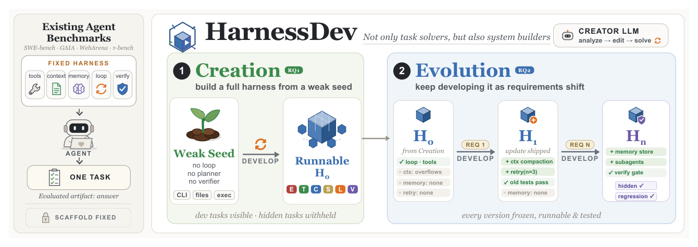
Figure 1 HarnessDev covers two stages of harness development. In Creation, a creator builds a complete harness from a weak but runnable seed and a small number of development cases. In Evolution, it continues to improve its own persistent harness using downstream execution feedback. Both stages evaluate runnable infrastructure that persists across tasks rather than a one-off task output.图 10 以每个冻结 harness 版本的执行器侧用量补充 RQ2 分数轨迹。我们将任务智能体/运行时的用量与创建者、评判器及诊断探测消耗的 token 分开统计。
Despite this practical need, most agent evaluations select a harness for a given comparison and report model performance on downstream tasks [18, 26, 29, 54, 61]. This setup supports controlled task-level comparison, but treats the harness as part of the experimental configuration rather than as an artifact to be developed. Recent work has begun to study harness representations, automated agent design, and agents that build or improve agent systems [15, 27, 31, 39, 56, 57]. However, it remains underexplored whether models can both create and continually improve runnable, persistent harnesses. Answering this question requires separating the model that develops the harness from the model that executes downstream tasks, recording the development environment, and measuring downstream performance, transfer across executors, distance from human-engineered systems, regression, and cost.
尽管存在这一现实需求，大多数智能体评估都是为某次比较选定一个 harness，然后报告模型在下游任务上的性能 [18, 26, 29, 54, 61]。这种设置支持受控的任务级比较，却把 harness 视为实验配置的一部分，而非有待开发的制品。近期工作已开始研究 harness 表示、自动化智能体设计，以及构建或改进智能体系统的智能体 [15, 27, 31, 39, 56, 57]。然而，模型能否既创建又持续改进可运行、可持久化的 harness，仍缺乏充分探索。回答这一问题需要将开发 harness 的模型与执行下游任务的模型分离，记录开发环境，并测量下游性能、跨执行器的迁移、与人工工程系统的差距、性能回退以及成本。
This evaluation gap is particularly consequential because harness engineering is fundamentally different from ordinary code editing. When a model modifies a standalone program, the target behavior is externally specified and success is locally verifiable. When a model modifies its own harness, it is editing the execution substrate through which it acts: the change alters how the model itself observes, plans, and recovers in all future tasks. Effective harness improvement therefore demands that the model recognize its own behavioral limitations from execution traces [42], diagnose structural bottlenecks in the system it runs inside, and commit targeted changes that accumulate into lasting, reusable capability gains rather than one-off fixes [49, 53]. As frontier models grow capable enough to edit multi-file codebases and close real pull requests, this ability is already latent; what is missing is a benchmark that measures it.
这一评估空白尤为关键，因为 harness 工程与普通的代码编辑存在本质区别。模型修改一个独立程序时，目标行为由外部给定，成功与否可在局部验证；而模型修改自己的 harness 时，它编辑的是自身赖以行动的执行基底：这一改动将影响模型此后在所有任务中如何观察、规划与恢复。因此，有效的 harness 改进要求模型能够从执行轨迹中识别自身的行为局限 [42]，诊断其所在系统的结构性瓶颈，并提交能累积为持久、可复用能力收益——而非一次性修补——的针对性修改 [49, 53]。前沿模型如今已能编辑多文件代码库并合并真实的 pull request，这种能力其实早已潜藏其中；所缺的只是一个度量它的基准。
We introduce HarnessDev (Figure 1), a benchmark that fills this gap by shifting the unit of evaluation from task
我们提出 HarnessDev（图 1），一个通过把评估单元从任务
outputs to runnable infrastructure: measuring a model’s ability to construct and maintain execution systems that are durable, inspectable, and reusable. The name reflects the software-engineering sense of develop: developing a harness includes both building it from scratch (i.e., Creation) and improving it through continued iteration and maintenance (i.e., Evolution). The benchmark covers two stages of harness development. In Creation, a creator LLM starts from a deliberately weak but runnable seed and builds a complete harness
输出转向可运行基础设施的基准来填补这一空白：度量模型构建并维护持久、可检视、可复用执行系统的能力。这一名称取 develop 的软件工程含义：开发一个 harness 既包括从零构建（即 Creation），也包括通过持续迭代与维护加以改进（即 Evolution）。该基准覆盖 harness 开发的两个阶段。在 Creation 中，创建者 LLM 从一个刻意弱小但可运行的种子出发，构建一个完整的 harness
for a new task family. In Evolution, it starts from an existing harness and continues to develop it toward better downstream task performance. Together, the two stages evaluate whether models can complete harness development tasks and continuously improve the resulting system.
以服务于新的任务族。在 Evolution 中，它以已有的 harness 为起点继续开发，以获得更好的下游任务性能。两个阶段合起来评估模型能否完成 harness 开发任务，并持续改进所得到的系统。
Evaluating a generated harness is harder than evaluating a generated answer. A harness can overfit to the model that wrote it, memorize development examples, improve one capability while silently regressing another, or improve the feedback-set score through benchmark-specific changes that do not transfer to new tasks. We therefore evaluate along two axes. Capability measures whether the harness works: we run it on held-out downstream tasks and report task-level success rates. Efficiency measures how many executor-model tokens the frozen harness consumes when deployed to solve downstream tasks.
评估一个生成的 harness 比评估一个生成的答案更难。harness 可能过拟合于编写它的模型、记住开发样例、在改进一种能力的同时悄然回退另一种能力，或者借助无法迁移到新任务的基准特化改动来抬高反馈集分数。因此我们沿两个维度评估：Capability（能力）度量 harness 是否可用——我们在 held-out 下游任务上运行它并报告任务级成功率；Efficiency（效率）度量冻结后的 harness 在部署解决下游任务时消耗多少执行器模型 token。
2
2
Our findings follow the two stages of harness development:
我们的发现沿 harness 开发的两个阶段展开：
Harness Creation. Current models can construct runnable harnesses from a weak seed, but the gap from mature human-engineered systems varies substantially by harness type. When each harness runs with the model that built it, model-built harnesses match the reference on short-form writing and exceed it on machine- learning experimentation. The gap is largest for search and research harnesses, which require long-horizon information seeking, and remains substantial for code harnesses, which must coordinate repository inspection, editing, and verification over many turns. Harnesses built by different creator models also differ substantially not only in downstream task performance, but also in the number of executor tokens they consume. Higher execution cost does not reliably produce better results, so harness quality must be assessed through both capability and efficiency.
Harness Creation（harness 创建）。当前模型能从弱种子构建出可运行的 harness，但与成熟人工工程系统的差距因 harness 类型而异。当每个 harness 与构建它的模型搭配运行时，模型构建的 harness 在短篇写作上与参考系统持平，在机器学习实验上则超过参考系统。差距最大的是搜索与研究（search and research）类 harness，它们需要长程信息获取；代码类 harness 的差距依然可观，因为它们需要在多轮交互中协调仓库检查、编辑与验证。不同创建者模型构建的 harness 不仅在下游任务性能上差异显著，在消耗的执行器 token 数量上亦然。更高的执行成本并不能可靠地换来更好的结果，因此必须同时从能力与效率两方面评估 harness 质量。
Harness Evolution. Current models can use downstream execution feedback to improve their own harnesses, but reliable evolution remains difficult. Performance often rises and falls across successive revisions, and gains observed during development become smaller and less consistent on unseen tasks. The outcome also depends strongly on the model that runs the harness: changing this runtime model alters both the starting performance and whether subsequent revisions help. These results show that models can make useful local improvements, while robust evolution across unseen tasks and runtime models remains an open challenge.
Harness Evolution（harness 演化）。当前模型能利用下游执行反馈改进自己的 harness，但可靠的演化仍非易事。性能往往在连续多次修订之间起落，开发期间观察到的收益在未见任务上变小且更不稳定。结果还强烈依赖于运行 harness 的模型：更换运行时模型会同时改变起始性能与后续修订是否有效。这些结果表明，模型能够做出有用的局部改进，而在未见任务与不同运行时模型之间实现稳健演化仍是开放挑战。
2Background
Most agent benchmarks begin after the problem has already been made executable: the task is specified, the reward or judge is defined, and the execution scaffold is fixed. This setting is necessary for controlled comparison, but it hides the work that dominates real deployment. In industry that work is spread across several roles—solutions architects, applied and platform engineers—but its most visible recent crystallization is the forward-deployed engineer (FDE), a title popularized by Palantir and since adopted by frontier-model companies [36, 38]. An FDE is embedded at the customer site after a system is adopted and turns a general- purpose model into something that runs against that customer’s data formats, workflows, and compliance constraints—for example, rewriting an ingestion path because logs may only be retained for a fixed period, or localizing a failure in a cross-jurisdiction contract pipeline. The role’s success criterion is not a demo or a benchmark score but whether the deployed system is genuinely used, keeps working, and improves; its failures are folded back into the product as fixes and feature requests [36]. The rapid growth of FDE hiring across frontier-model and data-platform companies [44] reflects a simple fact: a capable model is not yet a working system [30], and today the gap is closed by human engineers.
大多数智能体基准都从问题已经可执行之后开始：任务已规定，奖励或评判器已定义，执行脚手架已固定。这一设置对受控比较是必要的，却掩盖了真实部署中占主导地位的工作。在业界，这类工作分散在若干角色之中——解决方案架构师、应用与平台工程师——但其近期最显眼的具象化是前置部署工程师（forward-deployed engineer, FDE）：这一职衔由 Palantir 推广，此后被各前沿模型公司沿用 [36, 38]。FDE 在系统落地后驻扎客户现场，把通用模型改造成能在该客户的数据格式、工作流与合规约束下真正运行的东西——例如，因为日志只能保留固定期限而重写数据摄取路径，或在跨司法辖区的合同流水线中定位故障。这一角色的成功标准不是演示或基准分数，而是部署的系统是否真正被使用、是否持续运转并不断改进；其失败会以修复和功能请求的形式回流到产品中 [36]。前沿模型与数据平台公司 FDE 招聘的快速增长 [44] 反映了一个简单的事实：一个有能力的模型尚不等于一个可工作的系统 [30]，而今天填补这一鸿沟的仍是人类工程师。
Viewed from the model’s side, FDE work supplies three pieces of structure that benchmark designers normally presuppose. First, the target is vague: an informal business intent must be translated into concrete objectives, constraints, and success criteria. Second, the feedback signal is absent or unreliable: tests, judges, traces, or other self-evaluation must be constructed before anyone can tell whether the system is improving—“compliant” only becomes checkable once someone encodes what compliance means here. Third, the execution system does not exist in a usable form: the tools, context management, state, lifecycle logic, and verification interface through which future tasks will run must be built, adapted, and then maintained—an FDE stays with the system as requirements shift, rather than delivering once and leaving.
从模型一侧看，FDE 的工作提供了基准设计者通常预设的三类结构。其一，目标是模糊的：非正式的业务意图必须被转化为具体的目标、约束与成功标准。其二，反馈信号缺失或不可靠：必须先构建测试、评判器、轨迹或其他自我评估手段，才谈得上判断系统是否在改进——只有当有人把“合规”在此处的含义明确编码出来，“合规”才是可检查的。其三，执行系统并不以可用形式存在：未来任务赖以运行的工具、上下文管理、状态、生命周期逻辑与验证接口必须被构建、适配并持续维护——FDE 会随需求变化一直陪伴系统，而不是交付一次便离开。
This paper focuses on the third layer. In a typical controlled agent evaluation, researchers select an agent configuration and report task completion under that configuration. The harness is therefore usually part of the evaluation setup rather than the object being developed. HarnessDev instead asks whether language models can create this execution scaffold from a weak starting point and then improve it using feedback while preserving constraint compliance and held-out performance. Whereas Aspire studies how broad deployment needs become capability growth and S3Gym studies whether interaction experience can be judged and reused, HarnessDev isolates how models build and maintain the systems that carry them.
本文聚焦第三层。在典型的受控智能体评估中，研究者选定一种智能体配置，并报告该配置下的任务完成情况。因此 harness 通常是评估设置的一部分，而非被开发的对象。HarnessDev 则提出这样的问题：语言模型能否从一个薄弱起点创建这种执行脚手架，再利用反馈加以改进，同时保持约束合规与 held-out 性能。Aspire 研究宽泛的部署需求如何转化为能力增长，S3Gym 研究交互经验能否被评判和复用，而 HarnessDev 则单独考察模型如何构建并维护承载自身的系统。
3
3

Table 1 Harness-development settings. Creation builds a new harness; Evolution improves that harness from downstream execution feedback.
3Benchmark
3.1Overview
HarnessDev evaluates the execution system that a model develops, rather than the answer it produces for a single task. The submitted artifact is a runnable harness that is frozen and then reused across downstream tasks. A creator LLM LC works inside a development environment D to produce a runnable harness H. The development signal differs by setting and is defined in Table 1. After development, H is frozen. An executor LLM LE then runs inside it on a downstream task x, and evaluator J scores the resulting output y:
HarnessDev 评估的是模型开发出的执行系统，而非它为单个任务给出的答案。提交的制品是一个可运行的 harness，它会被冻结并在下游任务间复用。创建者 LLM LC 在开发环境 D 中工作，产出可运行的 harness H。开发信号随设置而异，定义见表 1。开发完成后，H 被冻结。随后，执行器 LLM LE 在其中针对下游任务 x 运行，评估器 J 为产生的输出 y 打分：
J−→score. (1)
J−→score. (1)
(LC, D) →H, (H, LE, x) →y
(LC, D) →H, (H, LE, x) →y
Thus, D is used to build H, whereas LE is used only after H is frozen. In implementation terms, H contains the execution loop, tools, context management, persistent state, lifecycle control, and verification; we describe these components in words rather than assigning each another symbol.
因此，D 用于构建 H，而 LE 只在 H 冻结后使用。在实现层面，H 包含执行循环、工具、上下文管理、持久状态、生命周期控制与验证；我们以文字描述这些组件，而不为每个组件另设符号。
The benchmark studies two stages of harness development.
该基准研究 harness 开发的两个阶段。
RQ1—Creation. Can a model build an effective harness from a weak but runnable seed? The creator must turn a task specification and a few development cases into infrastructure that generalizes to unseen tasks.
RQ1——Creation（创建）。模型能否从一个薄弱但可运行的种子构建出有效的 harness？创建者必须把任务规范和少量开发案例转化为可泛化到未见任务的基础设施。
RQ2—Evolution. Can a model improve an existing harness while preserving behavior that already works? The creator evolves its own Creation harness from downstream execution feedback. We additionally analyze the resulting artifacts and trajectories, including edit statistics, feedback response, held-out generalization, and transfer across executors.
RQ2——Evolution（演化）。模型能否在保留既有可用行为的同时改进现有 harness？创建者依据下游执行反馈演化自己的 Creation harness。我们还分析由此产生的制品与轨迹，包括编辑统计、对反馈的响应、held-out 泛化以及跨执行器迁移。
3.2Development settings
All settings provide a mutable development workspace, but they differ in the starting harness and the signal available to the creator. Table 1 gives the central distinction.
所有设置都提供一个可修改的开发工作区，但起始 harness 与创建者可用的信号各不相同。表 1 给出了核心区别。
Weak seed Hseed. Creation should measure whether a model can design an execution system, not whether it can reproduce benchmark boilerplate. Every creator therefore receives the same Hseed: a runnable compatibility layer, not a task-solving agent. It parses task and model configuration, exposes permitted low-level tools, and writes the required results, trajectories, logs, and task artifacts. Its tools are passive and act only when the harness calls them.
弱种子 Hseed。Creation 度量的应是模型能否设计一个执行系统，而非它能否复现基准样板代码。因此每个创建者都收到相同的 Hseed：一个可运行的兼容层，而非一个会解题的智能体。它解析任务与模型配置，暴露允许使用的低层工具，并写出所需的结果、轨迹、日志与任务制品。其工具是被动的，仅在 harness 调用时才动作。
The seed has no agent loop, task decomposition, tool policy, context management, persistent task state, verifier, retry or recovery logic, or stopping rule. It may issue one connectivity probe, but it does not attempt the task. Unmodified, it produces an empty or partial artifact and scores zero on every downstream benchmark. Any nonzero Creation score must therefore come from execution logic added by the creator. This boundary matters because real scaffolds combine many control primitives, and their composition affects task performance [31, 39, 40].
种子不具备 agent 循环、任务分解、工具策略、上下文管理、持久任务状态、验证器、重试或恢复逻辑，也没有停止规则。它可以发出一次连通性探测，但不会尝试任务本身。若不加修改，它只会产生空或残缺的制品，并在每个下游基准上得零分。因此，任何非零的 Creation 分数必然来自创建者添加的执行逻辑。划定这一边界的原因在于：真实的脚手架组合了众多控制原语，而组合方式会影响任务性能 [31, 39, 40]。
This design avoids two extremes. An empty repository would mix harness design with command-line and file-format setup; a mature agent would give away the planning and verification structure being tested. Hseed removes the setup burden without providing a solution policy. Figure 2 shows the seed and its development
这一设计避开了两个极端：空仓库会把 harness 设计与命令行及文件格式配置混在一起，而成熟的智能体则会泄露本待考察的规划与验证结构。Hseed 既免除了配置负担，又不提供任何解题策略。图 2 展示了种子及其开发
4
4
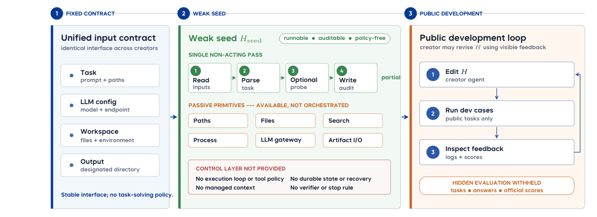
Figure 2 The weak Seed Harness and its development environment. The seed fixes only the input and audit envelopes and exposes passive, unorchestrated primitives; unmodified, it performs no task work. Development feedback is public; hidden tasks, answers, and official scores remain inaccessible.
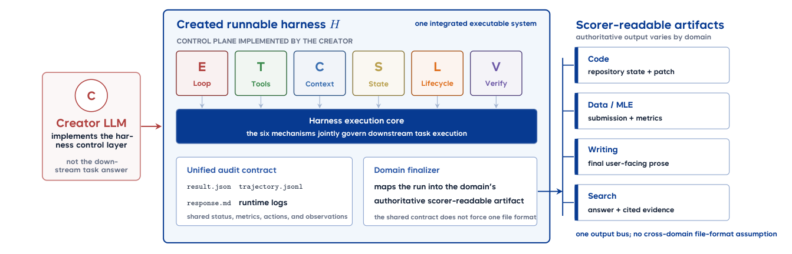
Figure 3 From control layer to scorable artifacts. The creator must implement the six control modules (E/T/C/S/L/V , colored as in Figure 1). A finished harness reports through unified auditable outputs and delivers a
environment; Figure 3 shows the control layer the creator must implement and the scorer-readable artifacts a finished harness delivers. Appendix C.1 gives its implementation skeleton.
环境；图 3 展示了创建者必须实现的控制层，以及成品 harness 所交付的可供 scorer 读取的制品。附录 C.1 给出其实现骨架。
Creation (RQ1). Along with Hseed, the creator receives a task-family specification, tool and permission constraints, a short design tutorial, and one to three development cases. It may revise the harness using feedback from those cases, but it never sees the human implementation or the hidden evaluation set. The resulting harness H is frozen before evaluation.
Creation（RQ1）。除 Hseed 外，创建者还会收到任务族规范、工具与权限约束、一份简短的设计教程，以及一至三个开发案例。它可以依据这些案例的反馈修订 harness，但始终看不到人类实现或隐藏评估集。所得 harness H 在评估前被冻结。
Evolution (RQ2). The creator starts from its own frozen RQ1 code harness H0. During development, it receives results from a fixed 100-task SWE-Pro feedback set and all 89 Terminal-Bench tasks. The 100 SWE-Pro tasks are a subset of the 731-instance public split used in Creation, and the 630-instance held-out split of Section 4.3 is drawn from the same split. In the reported protocol, the controller first evaluates H0 on both benchmarks. Each official post-H0 candidate is then frozen and submitted as a pair: one complete 100-task SWE-Pro evaluation and one complete 89-task Terminal-Bench evaluation of the same commit. A candidate enters the official trajectory only after both legs settle. Same-commit infrastructure repairs are merged; probes, partial legs, stopped runs, and invalid instances are excluded.
Evolution（RQ2）。创建者从自己冻结的 RQ1 代码 harness H0 出发。开发期间，它会收到固定的 100 任务 SWE-Pro 反馈集以及全部 89 个 Terminal-Bench 任务的结果。这 100 个 SWE-Pro 任务取自 Creation 所用 731 实例公开划分的子集，而 4.3 节的 630 实例 held-out 划分亦出自同一划分。在所报告的协议中，控制器先在两个基准上评估 H0；此后每个正式候选（H0 之后）都被冻结并成对提交：对同一 commit 各做一次完整的 100 任务 SWE-Pro 评估与一次完整的 89 任务 Terminal-Bench 评估。两条评估线全部落定后，候选方可进入正式轨迹。同一 commit 的基础设施修复会被合并；探测、不完整的评估线、中途停止的运行以及无效实例均被排除。
The controller provides a budget of ten post-H0 full-evaluation pairs. Between two charged pairs, the creator
控制器提供十个 H0 之后完整评估对的预算。在两个计费对之间，创建者
5
5

Table 2 Downstream evaluation coverage for Creation. Creation uses all 731 instances of the SWE-bench Pro public split. Evolution draws its 100-task SWE-Pro feedback set and its 630-instance held-out split from that same public split, and uses all 89 Terminal-Bench tasks as feedback.
may use at most two fixed-subset probes, each covering the same first five tasks from both benchmarks. Probe results are diagnostic and never become official scores. The creator terminates by declaring a non-H0 commit that has a complete official pair.
至多可以使用两次固定子集探测，每次探测覆盖两个基准中相同的前五个任务。探测结果仅作诊断之用，绝不计入正式分数。创建者通过宣布一个拥有完整正式评估对的非 H0 commit 来终止开发。
Both benchmarks shown during Evolution are feedback-bearing development sets, so in-trajectory scores measure online adaptation and version selection. Generalization is measured separately after freezing: every official version is additionally evaluated on 630 SWE-Pro instances disjoint from the feedback set, and these scores are never shown to the creator. Throughout this paper, held-out means withheld from the creator’s development loop; Section 4.3 gives the full setting.
Evolution 期间展示的两个基准都是承载反馈的开发集，因此轨迹内分数度量的是在线适应与版本选择能力。泛化则在冻结后单独测量：每个正式版本还会在与反馈集不相交的 630 个 SWE-Pro 实例上额外评估，且这些分数从不展示给创建者。本文中，held-out 一律指对创建者的开发循环隐藏；4.3 节给出完整设置。
3.3Domains and downstream benchmarks
Creation covers four domains and five downstream benchmarks (Table 2); Evolution currently focuses on code harnesses. Together, the suites contain 2,207 unique downstream instances. The Evolution feedback tasks come from the same benchmark suites and are therefore not counted again.
Creation 覆盖四个领域与五个下游基准（表 2）；Evolution 目前聚焦于代码 harness。各套件共包含 2,207 个不同的下游实例。Evolution 的反馈任务来自相同的基准套件，故不再重复计数。
Mature open-source systems define the capability surface in each domain. Depending on availability, a system may serve as a human-engineered reference or provide a development environment. These roles are assigned separately; inclusion does not imply that a system serves both. Appendix A lists the candidate systems, while the benchmark release fixes their roles, versions, and licenses.
成熟的开源系统界定了各领域的能力面。视可用性而定，一个系统既可作为人工工程参考，也可提供开发环境。两种角色分开指派；被收录并不意味着该系统同时承担两种角色。附录 A 列出候选系统，基准发布版则固定其角色、版本与许可证。
3.4Evaluation protocol
Every score is produced by a frozen harness in a standardized runtime. The executor LLM LE and evaluator J remain fixed within each comparison, so score changes reflect changes to the harness. Development and evaluation are also separated: hidden scores are not returned in Creation, and Evolution exposes only its designated feedback set during development.
每个分数都由冻结的 harness 在标准化运行时中产生。执行器 LLM LE 与评估器 J 在每次比较内保持固定，因此分数变化反映的是 harness 的变化。开发与评估同样彼此分离：Creation 不返回隐藏分数，Evolution 在开发期间也只暴露其指定的反馈集。
Creation. We compare a created harness with the common seed and, where available, a mature human- engineered harness. Self-Eval sets LE = LC and measures the complete creator–harness system. Unified- Eval runs every generated harness with the same fixed LE, making harnesses directly comparable.
Creation。我们将创建的 harness 与共同种子比较，并在有条件时与成熟的人工工程 harness 比较。Self-Eval 设 LE = LC，度量完整的创建者–harness 系统；Unified-Eval 则用同一固定 LE 运行所有生成的 harness，使各 harness 可直接比较。
Evolution. Evolution candidates are evaluated on the designated feedback benchmarks during development. Only complete two-benchmark pairs enter the official trajectory, and the creator selects a final paired candidate. After all trajectories end, every official version is additionally evaluated on a disjoint held-out set that is never shown to the creator, so adaptation to observed feedback and held-out generalization are reported separately. Appendix D details the evaluation settings and model roles.
Evolution。Evolution 候选在开发期间于指定的反馈基准上评估。只有完整的双基准评估对才进入正式轨迹，并由创建者从中选定最终的成对候选。所有轨迹结束后，每个正式版本还会在一个从不展示给创建者的不相交 held-out 集上额外评估，从而将“对已观察反馈的适应”与“held-out 泛化”分开报告。附录 D 给出评估设置与模型角色的细节。
Constraint compliance. The creator-visible specification states what a submitted harness may not do: hard- code instance-specific solutions, derive patches from task identifiers, file-name allowlists, or known answers, consult hidden tests, hidden answers, hidden patches, private scorer internals, or official evaluation feedback, or replace the provided provider-neutral runtime interface with its own LLM access path. Two properties
约束合规。创建者可见的规范明确禁止提交的 harness 做以下事情：硬编码针对特定实例的解法；从任务标识符、文件名白名单或已知答案推导补丁；查阅隐藏测试、隐藏答案、隐藏补丁、scorer 私有内部实现或官方评估反馈；以及用自带的 LLM 访问路径替换所提供的 provider 中立运行时接口。有两项性质
6
6
make these constraints checkable rather than advisory. First, the score path is isolated from the harness: a harness’s self-reported status is never a scoring input, SWE-Pro credit comes only from the real repository diff left in the task workdir, and Terminal-Bench credit only from final environment state, so no harness can earn score by asserting success. Second, every run retains its trajectory, result, and metric artifacts alongside the frozen harness source, which supports a post-hoc audit of the delivered code and of what that code actually executed. We audited the delivered harness source and the recorded execution artifacts of every run reported in this paper, and report the outcome as a null result: no harness obtained score through a prohibited route, and no run is excluded on these grounds.
使这些约束可被检查，而非流于劝告。其一，分数路径与 harness 隔离：harness 自报的状态绝不是评分输入——SWE-Pro 的得分只来自留在任务工作目录中的真实仓库 diff，Terminal-Bench 的得分只来自最终环境状态，因此任何 harness 都无法靠声称成功而得分。其二，每次运行都会把轨迹、结果与指标制品连同冻结的 harness 源码一并保留，从而支持对交付代码及其真实执行内容的事后审计。我们审计了本文报告的每一次运行的交付 harness 源码与记录的执行制品，结论为阴性：没有任何 harness 通过被禁止的途径得分，也没有任何运行因此被排除。
3.5Metrics
For each frozen harness, we report two quantities: downstream task performance under the benchmark’s native metric and the executor-model tokens consumed during evaluation. Execution cost is reported as both the total and the mean per task; tokens used by the creator to build or modify the harness are excluded. Creation compares each harness with the weak seed and available human-engineered references. Evolution reports the performance change from its initial harness H0 under the same executor and scorer.
对每个冻结的 harness，我们报告两个量：基准原生指标下的下游任务性能，以及评估期间消耗的执行器模型 token。执行成本同时以总量与每任务均值报告；创建者构建或修改 harness 所用的 token 不计入。Creation 将每个 harness 与弱种子及可用的人工工程参考比较；Evolution 报告在相同执行器与评分器下相对初始 harness H0 的性能变化。
4Experiments
We instantiate the benchmark defined in Section 3 and report results for Creation, Evolution, and cross-model
我们实例化第 3 节定义的基准，并报告 Creation、Evolution 与跨模型
behavior. The behavioral analysis compares resource use, response to feedback, and transfer across executors.
行为三方面的结果。行为分析比较资源使用、对反馈的响应以及跨执行器的迁移。
4.1Experimental setup
We evaluate six creator LLMs LC: Opus 4.8 [4], GPT-5.5 [33], Gemini 3.1 Pro [13], DeepSeek V4 Pro [11],
我们评估六个创建者 LLM LC：Opus 4.8 [4]、GPT-5.5 [33]、Gemini 3.1 Pro [13]、DeepSeek V4 Pro [11]、
Qwen 3.7 Max [1], and Seed 2.0 Pro [6]. Models run through their official APIs or OpenRouter [35]. We use Claude Code 2.1.177 as the development environment D, except that GPT-5.5 uses Codex 0.144.3. Appendix B gives the model, decoding, and development-environment configuration, the downstream execution resources and time limits, and the human-reference sources.
Qwen 3.7 Max [1] 与 Seed 2.0 Pro [6]。各模型通过其官方 API 或 OpenRouter [35] 运行。我们使用 Claude Code 2.1.177 作为开发环境 D，其中 GPT-5.5 例外地使用 Codex 0.144.3。附录 B 给出模型、解码与开发环境配置、下游执行资源与时限，以及人工参考系统的来源。
We follow the development and evaluation protocols in Sections 3.2–3.4. For RQ1, we independently create
我们遵循 3.2–3.4 节的开发与评估协议。对于 RQ1，我们独立创建
and evaluate three harnesses for each creator–benchmark pair and report avg@3. Under Self-Eval, the creator also serves as executor; under Unified-Eval, every harness uses Gemini 3.1 Pro, which isolates executor compatibility. Human-reference results are verified public system results rather than paired controls under one executor; their sources are listed in Appendix B.2.
并为每个创建者–基准对独立创建并评估三个 harness，报告 avg@3。Self-Eval 下，创建者同时充当执行器；Unified-Eval 下，每个 harness 都使用 Gemini 3.1 Pro，以隔离执行器兼容性的影响。人工参考结果是经核实的公开系统成绩，而非同一执行器下的成对对照；其来源列于附录 B.2。
4.2Harness Creation
RQ1 asks whether a model can turn the runnable weak seed into an effective harness for a task family. We compare the generated harnesses with the zero-scoring seed and with verified human-engineered systems, reporting both downstream performance and execution tokens.
RQ1 探讨模型能否把可运行的弱种子改造成某个任务族的有效 harness。我们将生成的 harness 与零分种子以及经核实的人工工程系统比较，同时报告下游性能与执行 token。
Overall findings. Creation quality varies substantially across task families (Tables 3–4 and Figure 4). Under Self-Eval, Opus 4.8 has the highest overall score (67.8), but remains below the human-engineered reference (86.2). Writing harnesses approach the reference, whereas Search shows the largest gap and Code also remains
总体发现。Creation 质量在任务族之间差异显著（表 3–4 与图 4）。Self-Eval 下，Opus 4.8 的总分最高（67.8），但仍低于人工工程参考（86.2）。写作类 harness 已接近参考系统，而 Search 的差距最大，Code 亦仍
behind. Opus 4.8 and Gemini 3.1 Pro lead MLE-bench with medal rates of 32.9 and 32.4. More broadly, 77.8% of failed Data tasks are attributed to harness defects, showing that the bottleneck is not only executor capability.
落后。Opus 4.8 与 Gemini 3.1 Pro 在 MLE-bench 上领先，奖牌率分别为 32.9 与 32.4。更宽泛地看，77.8% 的失败 Data 任务可归因于 harness 缺陷，表明瓶颈并不仅在于执行器能力。
Performance variation and executor dependence. Independent creations from the same model can still differ sharply. The clearest example is an Opus Code harness that performs well under Self-Eval but nearly collapses under Gemini because it hard-codes a 120-step limit around the original executor. Similar failures arise from overly strict stopping rules in Data. A single generated harness is therefore not representative, which motivates reporting avg@3.
性能波动与执行器依赖。即便来自同一模型，各次独立创建的结果仍可能差别巨大。最典型的例子是一个 Opus Code harness：它在 Self-Eval 下表现良好，换成 Gemini 后却几近崩溃，原因在于它围绕原执行器硬编码了 120 步上限。Data 中类似的失败源自过于严格的停止规则。因此，单个生成的 harness 不具代表性，这也是我们报告 avg@3 的原因。
7
7
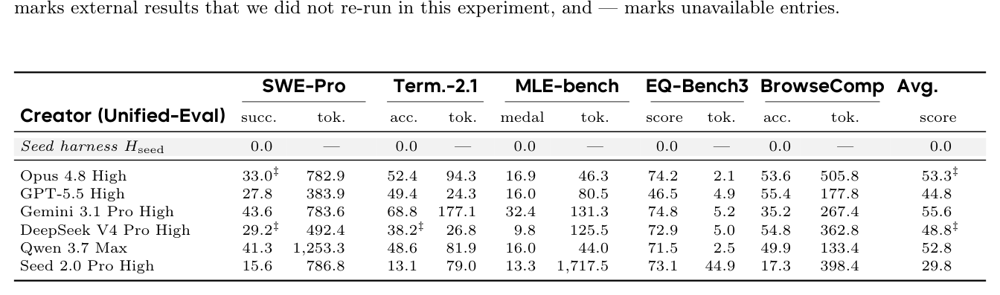
Table 3 RQ1 / Harness Creation under Self-Eval. Unless noted otherwise, each creator independently builds and evaluates three harnesses and the score is avg@3. Each benchmark uses its native metric, tok. is the mean execution tokens per harness in millions, and Avg. is the unweighted mean over SWE-Pro, Terminal-Bench, EQ-Bench3, and BrowseComp. MLE-bench covers 33 physical cells and 2,475 results. The human row is a system-level reference; *
Table 4 RQ1 / Harness Creation under a fixed Gemini executor. Every creator harness is executed by Gemini 3.1 Pro. The Gemini row reuses the Self-Eval control and is not counted as a new physical cell. Every score entry is avg@3. Code cells marked ‡ contain one collapsed R3 replica; dropping it gives post-hoc clean sensitivity means of 49.1 for Opus on SWE-Pro and 43.8/57.3 for DeepSeek on SWE-Pro/Terminal-Bench. GPT-5.5’s EQ-Bench3 cell is avg@3 (46.5); excluding its zero-valued first harness the mean is 69.7. All other definitions follow Table 3.
Fixing the executor changes the ranking substantially. Qwen, Seed, and DeepSeek improve in several Data and Search settings under Gemini, whereas Opus and GPT-5.5 are often stronger with their own executors. Thus, Self-Eval reflects harness design, executor capability, and the compatibility between them. Cost is similarly uneven: MLE-bench token use varies by about nineteen-fold, yet higher cost does not reliably produce a higher score (Figure 9).
固定执行器会大幅改变排名。Qwen、Seed 与 DeepSeek 在 Gemini 下的多个 Data 和 Search 设置中表现提升，而 Opus 与 GPT-5.5 往往在搭配自身执行器时更强。可见，Self-Eval 反映的是 harness 设计、执行器能力以及二者的兼容性。成本分布同样不均：MLE-bench 的 token 用量相差约十九倍，但更高的成本并不能可靠地换来更高的分数（图 9）。
SWE-Pro Term.-2.1 MLE-bench EQ-Bench3 BrowseComp Avg.
SWE-Pro Term.-2.1 MLE-bench EQ-Bench3 BrowseComp Avg.
Creator (Self-Eval) succ. tok. acc. tok. medal tok. score tok. acc. tok. score
Creator (Self-Eval) succ. tok. acc. tok. medal tok. score tok. acc. tok. score
Implementation behavior. The six creators follow distinct implementation strategies. Opus often rewrites the execution stack; GPT-5.5 adds a large monolithic agent; DeepSeek, Qwen, and Seed extend the seed with agent, tool, context, and state modules; and Gemini mostly edits the runner in place. The 18 Code artifacts add 17,111 net lines in total (Table 5), but edit size does not predict performance. Gemini adds the fewest lines (1,006) yet obtains the best Terminal-Bench score (68.8), suggesting that focused changes and frequent verification matter more than code volume.
实现行为。六个创建者采取了各不相同的实现策略：Opus 常常重写整个执行栈；GPT-5.5 倾向于添加一个大而全的单体智能体；DeepSeek、Qwen 和 Seed 通过 agent、工具、上下文与状态模块扩展种子；Gemini 则主要就地修改 runner。18 个 Code 制品共净增 17,111 行（表 5），但编辑规模并不能预测性能：Gemini 新增行数最少（1,006），却取得了最佳的 Terminal-Bench 分数（68.8），说明有针对性的修改与频繁的验证比代码量更重要。
All 18 Code harnesses implement an explicit execution loop; tools, lifecycle control, and verification are complete in 13/18, 13/18, and 15/18 artifacts, respectively (Figure 5). State and memory are the clearest gap: 11/18 artifacts define a State class, but only one exposes a state-saving interface and only one implements periodic checkpointing. No checkpoint event appears in 26,679 recorded task trajectories. Another recurring weakness is executor-specific configuration: hard-coded step or output limits can make a functional harness fail when the executor changes. Validation is also mostly syntactic; 441 of 2,325 executed Data tasks produce degenerate submissions that no harness detects.
全部 18 个 Code harness 都实现了显式的执行循环；工具、生命周期控制与验证则分别在 13/18、13/18 与 15/18 个制品中完整实现（图 5）。状态与记忆是最明显的缺口：11/18 个制品定义了 State 类，但仅有一个暴露状态保存接口、仅有一个实现周期性检查点——在 26,679 条已记录的任务轨迹中未出现任何检查点事件。另一个反复出现的弱点是执行器特化配置：硬编码的步数或输出上限会使一个功能正常的 harness 在更换执行器后失效。验证也大多停留在语法层面：2,325 个已执行的 Data 任务中有 441 个产生了退化提交，而没有任何 harness 检测到这些问题。
8
8
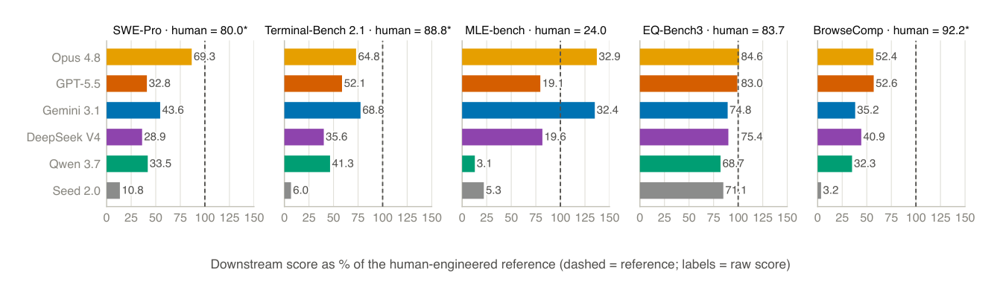
Figure 4 RQ1: distance to human-engineered references. Each creator’s Self-Eval downstream score is normalized to the human-engineered reference for that benchmark; the dashed line is the reference and the label beside each bar is the raw score. Human references come from different harness–model combinations and are not paired controls under a common executor, so this figure only shows the distance to the selected mature systems. Exceeding 100% means exceeding that external reference, not exceeding human ability.

Table 5 Edit size of the frozen RQ1 Code artifacts. File counts and total net LOC are summed over each creator’s three independently created artifacts; the median and range are per artifact. The statistics cover only harness/, which is the creator’s responsibility, and exclude the runtime substrate injected by the runner. Performance is Self-Eval avg@3.
Some generated mechanisms never affect execution. Of 108 component instances in Code, 72 trigger in real runs, 18 have only partial evidence, and 18 are never observed; all unobserved instances concern state and memory. The same pattern appears beyond Code: 124 of 587 Writing features are confirmed dead code, and 36 Data mechanisms sit on dead paths. Small implementation errors can also disable an entire tool chain. Self-test count alone is a weak signal: its Spearman correlation with downstream score is only 0.13–0.26 and is not significant, whereas revision calls reach 0.57 (p ≤.0005). Testing helps when the creator reads the failure, makes a targeted change, and re-verifies it.
一些生成的机制从未真正影响执行。Code 的 108 个组件实例中，72 个在真实运行中触发，18 个仅有部分证据，18 个从未被观察到；未被观察到的实例全部涉及状态与记忆。同样的模式也出现在 Code 之外：587 个 Writing 特征中有 124 个被确认为死代码，36 个 Data 机制位于死路径上。微小的实现错误也可能令整条工具链失效。仅凭自测次数是一个弱信号：它与下游分数的 Spearman 相关仅为 0.13–0.26 且不显著，而修订调用次数则达到 0.57（p ≤.0005）。只有当创建者读取失败信息、做出针对性修改并重新验证时，测试才真正有益。
9
9
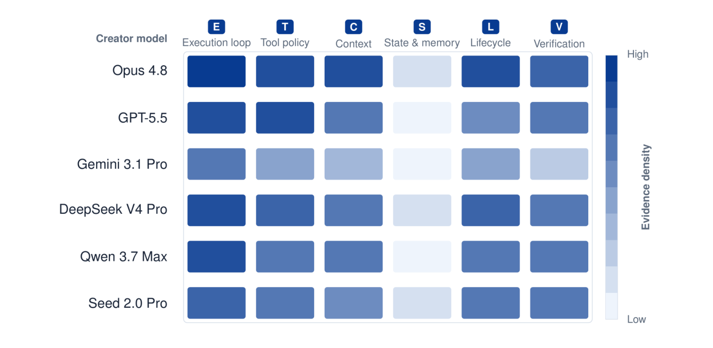
Figure 5 Harness architecture evidence across fields and stages. The six columns are execution loop, tool policy, context management, state and memory, lifecycle and recovery, and result verification. Each field is first normalized by the number of independent harnesses actually available and then aggregated over RQ1 Code/Data/Writing/Search and RQ2 Main; Seed has no RQ2 trajectory and is therefore built only from the four RQ1 fields. Full weight requires a mechanism to enter the main path or to trigger during a formal run, while declared code, configuration, or transient state receives only partial weight. Color shows mechanism evidence density, not score, significance, or causal effect.
Executor transfer. Portability depends on the individual harness (Figure 6). Several Qwen and DeepSeek harnesses improve under Gemini, indicating that their original executors were a bottleneck; Qwen gains 17.6 points on BrowseComp and 12.9 on MLE-bench. Opus shows the opposite pattern: its Self-Eval SWE-Pro score falls from 69.3 to 33.0 under Gemini, and its Writing score falls from 84.6 to 74.2. In the Opus Search harness, the duplicate-query rate rises from 10.1% to 88.2% after the executor changes, showing that its deduplication, review, and termination rules are adapted to the original model. A runnable harness can therefore be used by another model, but capability transfers only when its prompts, tool protocol, budgets, and stopping rules remain compatible.
执行器迁移。可移植性因 harness 而异（图 6）。若干 Qwen 与 DeepSeek harness 在 Gemini 下表现提升，说明其原执行器才是瓶颈；Qwen 在 BrowseComp 上提高 17.6 分，在 MLE-bench 上提高 12.9 分。Opus 则呈现相反模式：其 Self-Eval SWE-Pro 分数在 Gemini 下从 69.3 跌至 33.0，Writing 分数从 84.6 跌至 74.2。在 Opus Search harness 中，执行器更换后重复查询率从 10.1% 飙升至 88.2%，说明其去重、审查与终止规则均是围绕原模型适配的。因此，可运行的 harness 可以被另一个模型使用，但唯有当其提示词、工具协议、预算与停止规则保持兼容时，能力才会随之迁移。
10
10
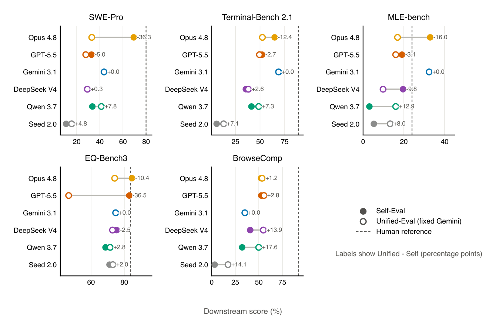
Figure 6 Harness portability under a fixed Gemini executor. Filled markers are Self-Eval, hollow markers are the fixed Gemini result for the same creator harness, labels are Unified-Eval minus Self-Eval, and dashed lines are external human-engineered system references. All panels use the avg@3 values of Table 3 and Table 4; the clean sensitivity means for the two collapsed code cells are given in the caption of Table 4.
4.3Harness Evolution
Overall findings. All five self-runtime creators improve on the visible feedback pair, but the gains shrink on held-out tasks. Opus 4.8 has the largest held-out improvement at +4.44 points. Transfer is weaker under the fixed Gemini executor: only Opus improves on held-out tasks, while the other three lineages regress. Evolution can therefore produce useful local changes, but the gains remain small and often specialize to the current executor or feedback set.
总体发现。全部五个自运行时创建者都在可见反馈对上有所改进，但收益在 held-out 任务上明显缩水。Opus 4.8 的 held-out 提升最大，为 +4.44 分。在固定 Gemini 执行器下迁移更弱：只有 Opus 在 held-out 任务上有所改进，其余三个谱系均出现回退。可见，演化能够产生有用的局部修改，但收益依然有限，且往往特化于当前执行器或反馈集。
Evaluation protocol. RQ2 asks whether a creator can improve its RQ1 Code harness using downstream execution feedback. Tasks repeatedly evaluated during Evolution form the feedback set; tasks evaluated only after Evolution, with results never returned to the creator, form the held-out set. We report the individual benchmark scores and an equally weighted pair score:
评估协议。RQ2 探讨创建者能否利用下游执行反馈改进其 RQ1 Code harness。Evolution 期间被反复评估的任务构成反馈集；仅在 Evolution 结束后评估、且结果从不返回给创建者的任务构成 held-out 集。我们报告单个基准分数以及一个等权成对分数：
¯Pt = 1
¯Pt = 1
P SWE100
P SWE100
t + P Term89
t + P Term89
2 �
2 �
, (2)
, (2)
where the two terms are percentage scores and t indexes the frozen versions that completed a formal evaluation.
其中两项均为百分比分数，t 为完成正式评估的各冻结版本的索引。
Each lineage starts from its RQ1 harness H0. We run five self-runtime trajectories and four fixed-Gemini ablations, using the same creator, development environment, and starting harness. As defined in Section 3.2, an official version must complete both the 100-task SWE-Pro and 89-task Terminal-Bench evaluations; probes are diagnostic only. The nine lineages produce 73 official versions and 64 adjacent version switches; Figure 7 shows every feedback-set trajectory.
每个谱系都从其 RQ1 harness H0 出发。我们运行五条自运行时轨迹和四个固定 Gemini 消融实验，使用相同的创建者、开发环境与起始 harness。如 3.2 节所定义，正式版本必须同时完成 100 任务 SWE-Pro 与 89 任务 Terminal-Bench 评估；探测仅作诊断之用。九个谱系共产生 73 个正式版本和 64 次相邻版本切换；图 7 展示了每条反馈集轨迹。
11
11
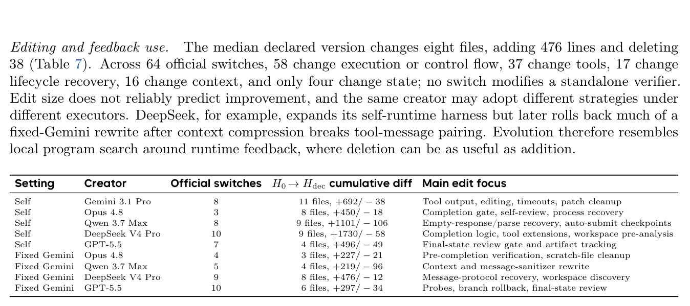
Table 6 RQ2 feedback-set gains and post-freeze held-out-630 generalization. The feedback pair is the unweighted mean of the SWE-Pro-100 and Terminal-Bench-89 percentage scores; the held-out columns use only the SWE-Pro-630 tasks run afterwards. The final gap is the best held-out score of a lineage minus the score of its declared version. The Gemini control is listed once.
Table 7 Code edit size of the nine RQ2 lineages. “Official switches” counts only adjacent official versions; the cumulative diff compares H0 with the version declared by the creator for each lineage. The edit focus describes behavior observed in that single trajectory and is not a general property of the corresponding creator model.
After all trajectories end, we evaluate every official version on the 630-instance SWE-Pro held-out split, drawn from the public-split instances disjoint from the 100-task feedback set (Section 3.2). These scores are never shown to the creator and cannot affect editing, stopping, or final version selection. Table 6 therefore separates visible feedback gains from held-out generalization, and Figure 8 overlays the two trajectories for every lineage.
所有轨迹结束后，我们在 630 实例的 SWE-Pro held-out 划分上评估每个正式版本；该划分取自与 100 任务反馈集不相交的公开划分实例（3.2 节）。这些分数从不展示给创建者，也不可能影响编辑、停止或最终版本选择。因此，表 6 将可见反馈收益与 held-out 泛化分开呈现，图 8 则为每个谱系叠加了这两条轨迹。
Eight of the nine lineages complete at least one full loop from reading results to editing, re-evaluation, and version selection. Failure diagnosis remains the weakest step: the dedicated trajectory interface is called only twice, and explicitly inspected cases cover just 0.5%–40.2% of the 189 feedback tasks, depending on the lineage. Creators instead rely on custom scripts and small probes, both of which can disagree with the full evaluation; one GPT-5.5 candidate passes all five Terminal probes but scores only 0.584 on the full set.
九个谱系中有八个至少完成了一次“读取结果→编辑→重新评估→版本选择”的完整循环。失败诊断仍是最薄弱的环节：专用轨迹接口仅被调用两次，显式检查的案例视谱系而定，仅覆盖 189 个反馈任务中的 0.5%–40.2%。创建者转而依赖自定义脚本与小型探测，而二者都可能与全集评估不一致；一个 GPT-5.5 候选通过了全部五个 Terminal 探测，在全集上却只得 0.584 分。
12
12
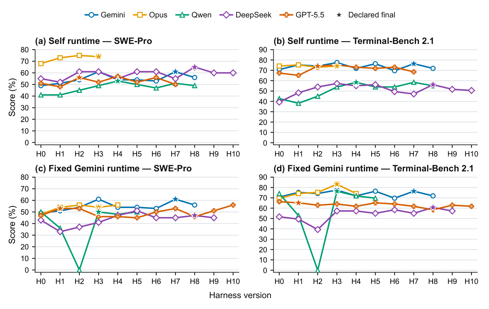
Figure 7 Feedback-set evolution trajectories on SWE-Pro and Terminal-Bench. The top row is self runtime and the bottom row is the fixed Gemini runtime; the left column is SWE-Pro-100 and the right column is Terminal-Bench-89. H0 is the frozen RQ1 harness, Hi are later frozen commits that completed a formal evaluation on both benchmarks, and stars mark the version declared by the creator. The Gemini control is reused in both settings, and each creator–runtime cell has a single trajectory.
Opus gives the clearest positive example: it finds that 99 of 100 runs report success while only 48 pass, traces the gap to premature completion, and adds a completion check. Feedback is most useful when it exposes a concrete failure mode and the resulting change is verified end to end.
Opus 提供了最清晰的正面案例：它发现 100 次运行中有 99 次报告成功，实际通过却只有 48 次，于是将差距追溯到过早宣告完成的问题，并添加了一个完成检查。当反馈能暴露具体的失败模式、且由此产生的修改经过端到端验证时，其价值最大。
Stability and final-version selection. Evolution is not monotonic. Of the 64 official switches, eight regress on both benchmarks, 16 show a single-benchmark regression, three show a cross-benchmark trade-off, seven produce no measurable change, 27 report gains that remain inside the repeated-run noise band, two have clear positive evidence beyond the noise band, and one contains no executable code change. The same commit can vary by about ±4.75 pair-score points, so small gains cannot be attributed to code changes from score alone. Added code is not necessarily active either: of 169 new functions or classes, 113 are reachable from the entry point, 31 are reachable only through dead code, and 25 have no caller. Opus’s completion gate is a positive example with path and case-level evidence; Qwen’s message sanitizer is the opposite, breaking valid Gemini tool-result sequences.
稳定性与最终版本选择。演化并非单调递进。在 64 次正式切换中：8 次在两个基准上同时回退；16 次出现单基准回退；3 次出现跨基准权衡；7 次无可测变化；27 次的收益仍落在重复运行噪声带内；2 次有超出噪声带的明确正面证据；1 次不含任何可执行代码修改。同一 commit 的成对分数波动可达约 ±4.75 分，因此仅凭分数无法将小幅收益归因于代码修改。新增代码也未必处于激活状态：169 个新函数或类中，113 个可从入口点到达，31 个仅能经由死代码到达，25 个没有调用者。Opus 的完成门是具备路径与案例级证据的正面案例；Qwen 的消息清理器则相反，破坏了有效的 Gemini 工具结果序列。
Creators usually select a version near the best visible feedback score, but that choice rarely matches the best held-out version. All five self-runtime declarations improve over H0 on held-out tasks, with gains of +1.43 to +4.44 points and a mean gain of +3.11. Under fixed Gemini, however, only Opus improves and the other
创建者通常会选择接近最佳可见反馈分数的版本，但这一选择很少与最佳 held-out 版本吻合。全部五个自运行时声明都在 held-out 任务上超过 H0，收益介于 +1.43 至 +4.44 分之间，平均收益为 +3.11。然而在固定 Gemini 下，只有 Opus 有所改进，其余
three regress. Across 64 comparable switches, feedback and held-out scores move in the same direction only 34 times (53.1%), and only 2/9 declared versions are held-out optimal. Visible feedback is therefore useful for local search but unreliable for final selection: repeatedly optimizing a noisy score can favor a lucky run and amplify overfitting.
三个谱系出现回退。在 64 次可比较的切换中，反馈分数与 held-out 分数仅 34 次同向变动（53.1%），且 9 个声明版本中只有 2 个是 held-out 最优。可见，可见反馈对局部搜索有用，却不足以支撑最终选择：反复优化一个含噪分数可能偏爱偶然走运的运行，并放大过拟合。
13
13
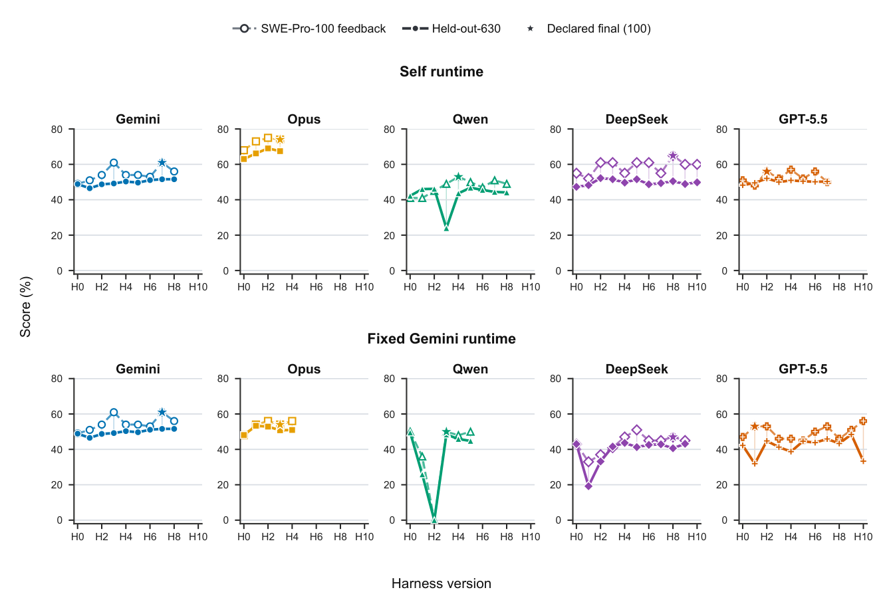
Figure 8 SWE-Pro-100 feedback trajectories and post-freeze held-out-630 performance. Each column isolates one creator model and overlays its visible 100-task feedback trajectory with its post-freeze 630-task held-out trajectory. The top row is self runtime and the bottom row is fixed Gemini. Stars mark the final versions declared from 100-task feedback. Faint vertical segments connect matched harness versions. The Gemini control is repeated only for visual comparison.
5Related Work
HarnessDev lies at the intersection of agent benchmarking, autonomous agent construction, and harness evolution.
HarnessDev 处于智能体基准测试、自主智能体构建与 harness 演化的交汇处。
Agent benchmarks and harness development. Benchmarks such as SWE-bench [18], GAIA [29], WebArena [61], τ-bench [54], and AgentBench [26] standardize tasks, environments, and scoring, but generally evaluate task execution under a selected harness. Harness-Bench [55] instead measures how harness choice changes model performance. The Meta-Agent Challenge [27] directly evaluates development: a meta-agent iteratively programs an agent artifact in a sandbox and is scored on protected held-out tests across five domains. It is closely related to Creation, while HarnessDev also studies continued development, separates creator and executor models, and measures execution cost.
智能体基准与 harness 开发。SWE-bench [18]、GAIA [29]、WebArena [61]、τ-bench [54] 与 AgentBench [26] 等基准对任务、环境和评分做了标准化，但通常是在选定 harness 下评估任务执行。Harness-Bench [55] 则度量 harness 的选择如何改变模型性能。Meta-Agent Challenge [27] 直接评估开发过程：元智能体在沙箱中迭代编程一个智能体制品，并依据五个领域中受保护的 held-out 测试打分。它与 Creation 密切相关；HarnessDev 则进一步研究持续开发，分离创建者与执行器模型，并度量执行成本。
HarnessOpt-Bench [47] is the closest concurrent benchmark to Evolution. An LLM optimizer receives a seed harness, graded feedback, and a fixed evaluation budget; a trusted environment then scores its nominated candidate by normalized gain on an inaccessible test partition. Its focus is optimizing a provided harness, although its near-empty GAIA seed also requires construction. In contrast, HarnessDev connects from- scratch Creation to Evolution and evaluates the same frozen artifact under self and fixed runtime models. It uses in-trajectory scores as feedback, then tests every frozen version on a disjoint 630-task SWE-Pro set, separating adaptation from held-out generalization throughout the trajectory.
HarnessOpt-Bench [47] 是与 Evolution 最接近的同期工作。其 LLM 优化器接收种子 harness、分级反馈与固定评估预算；随后由可信环境按被提名候选在不可访问测试分区上的归一化收益打分。它的重点在于优化给定的 harness，尽管其近乎空白的 GAIA 种子同样需要构建。相比之下，HarnessDev 将从零构建的 Creation 与 Evolution 串联起来，并在自运行时与固定运行时模型下评估同一冻结制品。它以轨迹内分数作为反馈，随后在不相交的 630 任务 SWE-Pro 集上测试每个冻结版本，从而在整个轨迹中把适应与 held-out 泛化区分开。
14
14
Evo-Bench [16] also evaluates Evolution by asking evolver models to improve a shared CodeAct seed while holding the runtime model fixed. It scores each lineage’s final revision on a disjoint, sensitivity-calibrated multi- domain suite. HarnessDev instead connects Creation and Evolution, includes both self- and fixed-runtime views, measures execution-token cost, evaluates transfer to another executor, and scores every frozen version on its held-out split. Thus, Evo-Bench emphasizes cross-domain final-revision quality, whereas HarnessDev also studies how held-out performance changes along a feedback-driven trajectory.
Evo-Bench [16] 同样评估 Evolution：它要求演化模型在保持运行时模型固定的情况下改进一个共享的 CodeAct 种子，并在不相交的、经敏感性校准的多领域套件上为每个谱系的最终修订打分。HarnessDev 则贯通 Creation 与 Evolution，兼含自运行时与固定运行时两种视角，度量执行 token 成本，评估向其他执行器的迁移，并在各自 held-out 划分上为每个冻结版本打分。因此，Evo-Bench 强调跨领域的最终修订质量，而 HarnessDev 还考察 held-out 性能如何沿反馈驱动的轨迹演变。
Automated agent design and evolution. Human-engineered systems such as Claude Code [2], Codex [32], OpenHands [49], and SWE-agent [53] combine execution loops, tools, context management, and recovery mechanisms [40]. ADAS [15], AFlow [57], MASS [60], and EvoAgentX [51] search over prompts, workflows, operators, or agent topologies; other systems let models construct more of the agent in natural language or code [22, 31, 39].
自动化智能体设计与演化。Claude Code [2]、Codex [32]、OpenHands [49]、SWE-agent [53] 等人工工程系统融合了执行循环、工具、上下文管理与恢复机制 [40]。ADAS [15]、AFlow [57]、MASS [60]、EvoAgentX [51] 在提示词、工作流、算子或智能体拓扑空间中搜索；另一些系统则让模型以自然语言或代码构建智能体的更多组成部分 [22, 31, 39]。
Recent systems optimize executable harness code directly. VeRO [46] provides versioned snapshots, budget- controlled evaluation, and structured traces. Meta-Harness [21] uses a coding-agent proposer that can inspect prior candidates, scores, and traces before proposing the next harness. Other methods improve prompts, workflows, memory, skills, tools, or code between episodes [10, 14, 19, 20, 23, 25, 28, 42, 43, 48]. Self-Harness [56] derives model-specific edits from failures and applies regression testing; HarnessFix [9] uses a provenance- and control-flow-aware representation for localized repair; DemoEvolve [8] uses demonstrations when reward feedback is unreliable; and HarnessCompass [58] addresses overfitting and component interference. Harness-R1 [41] instead trains a harness engineer to convert failure batches into validated patches. These works propose methods or infrastructure for harness improvement; HarnessDev evaluates how well general-purpose frontier models perform the broader developer role under one Creation-and-Evolution protocol.
近期系统开始直接优化可执行的 harness 代码。VeRO [46] 提供版本化快照、预算受控的评估与结构化轨迹。Meta-Harness [21] 使用编码智能体作为提议者，在提出下一个 harness 之前可以检视先前的候选、分数与轨迹。其他方法则在轮次之间改进提示词、工作流、记忆、技能、工具或代码 [10, 14, 19, 20, 23, 25, 28, 42, 43, 48]。Self-Harness [56] 从失败中推导模型特化的修改并施加回归测试；HarnessFix [9] 采用感知来源与控制流的表示进行局部修复；DemoEvolve [8] 在奖励反馈不可靠时借助演示；HarnessCompass [58] 处理过拟合与组件相互干扰。Harness-R1 [41] 则训练一个 harness 工程师，把失败批次转化为经验证的补丁。这些工作提出的是 harness 改进的方法或基础设施；HarnessDev 评估的则是通用前沿模型在统一的 Creation-and-Evolution 协议下履行更广义开发者角色的能力。
Evaluating harness evolution. Final task gain can conflate informed diagnosis with blind search. Priority- ranking evaluation [17] tests whether an optimizer identifies the components most worth changing. Harness Updating Is Not Harness Benefit [24] separates producing a useful update from an executor’s ability to exploit it, motivating our creator–executor separation and Self-Eval/Unified-Eval views. SEAGym [59] records intermediate snapshots, cost, and in- and out-of-distribution results, showing that later updates need not preserve held-out gains. Matched-budget studies likewise find that harness evolution can overfit its search benchmark and may not beat simpler search baselines [50]. HarnessDev therefore freezes runnable artifacts, records development trajectories and execution cost, and evaluates transfer across runtime models. We treat its Evolution trajectories as adaptation to feedback-bearing sets and assess held-out generalization afterward on disjoint SWE-Pro tasks; matched-search evaluation remains future work.
评估 harness 演化。最终任务收益可能把有依据的诊断与盲目搜索混为一谈。优先级排名评估 [17] 检验优化器能否识别最值得修改的组件。Harness Updating Is Not Harness Benefit [24] 将“产生有用更新”与“执行器利用该更新的能力”区分开来，这启发了我们的创建者–执行器分离以及 Self-Eval/Unified-Eval 双视角。SEAGym [59] 记录中间快照、成本以及分布内与分布外结果，表明后续更新未必能保住 held-out 收益。同预算研究同样发现，harness 演化可能过拟合其搜索基准，且未必胜过更简单的搜索基线 [50]。为此，HarnessDev 冻结可运行制品，记录开发轨迹与执行成本，并评估跨运行时模型的迁移。我们将 Evolution 轨迹视为对承载反馈集合的适应，并在其后于不相交的 SWE-Pro 任务上评估 held-out 泛化；同搜索条件下的对照评估留待未来工作。
6Discussion, Limitations, and Conclusion
The results show why harness development should be evaluated directly. Creation performance varies sharply by domain: under Self-Eval, current models match the human reference in writing and exceed it in machine-learning experimentation, but remain far behind in search and research and still trail it in code. Cross-executor comparisons show that some harnesses improve under a stronger executor, while others exhibit creator co-adaptation. Evolution is harder still: useful intermediate updates are often erased by later changes, and more updates do not guarantee a positive final gain. Together, these findings separate the quality of the persistent execution system from the capability of the model running inside it. The fixed-Gemini Evolution ablation sharpens this point: changing only the runtime binding can substantially move H0 and alter which harness changes are useful.
上述结果说明了为何应当直接评估 harness 开发。Creation 性能在领域间差异悬殊：Self-Eval 下，当前模型在写作上与人类参考持平，在机器学习实验上超过人类参考，但在搜索与研究上远为落后，在代码上亦仍逊色。跨执行器比较显示，一些 harness 在更强执行器下有所改进，另一些则表现出与创建者的协同适应。演化更是难上加难：有用的中间更新常被后续修改抹去，更新次数多并不保证最终收益为正。这些发现共同将持久执行系统的质量与运行其中的模型能力区分开来。固定 Gemini 的 Evolution 消融进一步强化了这一结论：仅改变运行时绑定即可大幅移动 H0，并改变哪些 harness 修改有效。
6.1Limitations
The four categories cover many but not all real deployments. Human baselines are uneven and not guaranteed optimal. Unified-Eval reduces but cannot fully remove executor-model differences, since harness–model interaction is complex. The behavioral comparisons are descriptive and are limited by incomplete benchmark coverage. Evolution currently has one trajectory per creator–runtime cell and one unfinished main-runtime cell, and its post-freeze held-out evaluation covers SWE-Pro only, so the trajectories do not support uncertainty
四个类别覆盖了许多但非全部真实部署场景。人类基线参差不齐，且不保证最优。Unified-Eval 能减少但无法完全消除执行器模型差异，因为 harness–模型交互本身十分复杂。行为比较属于描述性分析，并受基准覆盖不完整的限制。Evolution 目前在每个创建者–运行时单元上仅有一条轨迹，另有一个未完成的主运行时单元；其冻结后的 held-out 评估仅覆盖 SWE-Pro，因此这些轨迹不支持不确定性
15
15
estimates or population-level comparisons. The development environment D is held fixed across both stages; whether an evolved harness can itself serve as the development environment for further evolution is left to future work. Finally, HarnessDev measures model-external learning and does not claim heuristic learning can replace parameter training.
估计或总体层面的比较。开发环境 D 在两个阶段中保持固定；演化后的 harness 能否转而充当进一步演化的开发环境，留待未来工作探讨。最后，HarnessDev 度量的是模型外部的学习，并不主张启发式学习可以取代参数训练。
6.2Conclusion
HarnessDev moves agent evaluation from whether a model can solve tasks inside a fixed system to whether it can create and maintain the systems that solve future tasks. Through a four-category human baseline
HarnessDev 把智能体评估从“模型能否在固定系统内解决任务”转向“模型能否创建并维护那些解决未来任务的系统”。借助一个四类别人类基线
corpus, from-scratch creation tasks, feedback-driven evolution, Self- and Unified-Eval, and comparisons with human-engineered references, it makes agent-built execution harnesses a measurable object. If model weights are one place intelligence accumulates, the harness is another: explicit, inspectable, testable, reusable, and continually improvable through failure, feedback, and real engineering pressure.
语料库、从零创建任务、反馈驱动的演化、Self-Eval 与 Unified-Eval，以及与人工工程参考的比较，HarnessDev 使智能体构建的执行 harness 成为可度量的对象。如果模型权重是智能积累的一个场所，那么 harness 便是另一个：显式、可检视、可测试、可复用，并可通过失败、反馈与真实的工程压力持续改进。
Ethics statement. HarnessDev is built from publicly available benchmark suites and open-source harnesses; no human-generated content is collected. Automated harness construction risks amplified insecure tool use, so the benchmark states explicit constraints on what a submitted harness may do and audits compliance after every run (Section 3.4); no violation was observed in this study, and we release the audit artifacts so the check can be repeated. Creation runs and downstream benchmark tasks execute in containers, but that boundary is provisioned for reproducibility rather than for containment; anyone reusing the generated harnesses should treat them as untrusted code and isolate them more strictly than we did.
伦理声明。HarnessDev 由公开可用的基准套件与开源 harness 构建；未收集任何人类生成内容。自动化 harness 构建存在放大不安全工具使用的风险，因此该基准对提交 harness 的行为给出明确约束，并在每次运行后审计其合规性（3.4 节）；本研究未观察到任何违规，我们同时发布审计制品以便复查。Creation 运行与下游基准任务均在容器中执行，但这一边界是为可复现性而设，而非为安全隔离；任何复用生成 harness 的人都应将其视为不可信代码，并施加比我们更严格的隔离。
16
16
7Contributions
Core Contributors Yuhao Wu, Jingyuan Zhang, Jiajun Shi
核心贡献者 Yuhao Wu, Jingyuan Zhang, Jiajun Shi
Contributors Xinping Lei, Qingshui Gu, Yuxuan Zhang, Zexuan Wang, Chen He, Chen Huang, Maojia Song, Zhiyuan Zeng, Shaowen Wang, Jinkai Liu, Yunfeng Shi, Jiaheng Liu
贡献者 Xinping Lei, Qingshui Gu, Yuxuan Zhang, Zexuan Wang, Chen He, Chen Huang, Maojia Song, Zhiyuan Zeng, Shaowen Wang, Jinkai Liu, Yunfeng Shi, Jiaheng Liu
Corresponding Authors Yuhao Wu (wuyuhao.621@bytedance.com) Shen Yan (sheny@bytedance.com) Wenhao Huang (huang.wenhao@bytedance.com)
通讯作者 Yuhao Wu (wuyuhao.621@bytedance.com) Shen Yan (sheny@bytedance.com) Wenhao Huang (huang.wenhao@bytedance.com)
Ge Zhang (gezhang@umich.edu) Wenxuan Zhang (wxzhang@sutd.edu.sg)
Ge Zhang (gezhang@umich.edu) Wenxuan Zhang (wxzhang@sutd.edu.sg)
17
17
ReferencesReferences（参考文献）
[1] Alibaba Group. Qwen3.7-max. https://www1.hkexnews.hk/listedco/listconews/sehk/2026/0520/ 2026052001340.pdf, 2026. Official announcement.
[REF] 原样保留英文文献列表
[3] Anthropic. Effective context engineering for AI agents. https://www.anthropic.com/engineering/ effective-context-engineering-for-ai-agents, 2025.
[REF] 原样保留英文文献列表
[4] Anthropic. Claude opus 4.8. https://www.anthropic.com/claude/opus, 2026. Official model page covering
[REF] 原样保留英文文献列表
Liu, Leon Maksin, Tejal Patwardhan, Lilian Weng, and Aleksander Mądry. MLE-bench: Evaluating machine learning agents on machine learning engineering. arXiv:2410.07095, 2024.
[REF] 原样保留英文文献列表
[12] Xiang Deng, Jeff Da, Edwin Pan, Yannis Yiming He, Charles Ide, Kanak Garg, Niklas Lauffer, Andrew Park,
[REF] 原样保留英文文献列表
[13] Google. Gemini 3.1 pro: A smarter model for your most complex tasks. https://blog.google/ innovation-and-ai/models-and-research/gemini-models/gemini-3-1-pro/, 2026.
[REF] 原样保留英文文献列表
[14] Yufei He, Juncheng Liu, Yue Liu, Yibo Li, Tri Cao, Zhiyuan Hu, Xinxing Xu, and Bryan Hooi. Evotest: Evolutionary test-time learning for self-improving agentic systems. arXiv preprint arXiv:2510.13220, 2025.
[REF] 原样保留英文文献列表
[16] Lisheng Huang, Chen Yang, Hao Zhou, Huatong Song, Zongchao Chen, Ran Le, Yang Song, Wayne Xin Zhao,
[REF] 原样保留英文文献列表
[17] Kai Tzu iunn Ong, Minseok Kang, Dongwook Choi, Junhee Cho, Seungju Kim, Seungwon Lim, Geunha Jang,
[REF] 原样保留英文文献列表
Minwoo Oh, Bogyung Jeong, Sunghwan Kim, Taeyoon Kwon, and Jinyoung Yeo. Towards direct evaluation of harness optimizers via priority ranking, 2026. URL https://arxiv.org/abs/2605.22505.
[REF] 原样保留英文文献列表
Continual harness: Online adaptation for self-improving foundation agents. arXiv preprint arXiv:2605.09998, 2026.
[REF] 原样保留英文文献列表
[20] Hyunin Lee, Jinglue Xu, Jeffrey Seely, Donghyun Lee, Matei Zaharia, and Yujin Tang. Recursive harness
[REF] 原样保留英文文献列表
18
18
[21] Yoonho Lee, Roshen Nair, Qizheng Zhang, Kangwook Lee, Omar Khattab, and Chelsea Finn. Meta-Harness:
[REF] 原样保留英文文献列表
Han, Tao Gui, et al. Agentic harness engineering: Observability-driven automatic evolution of coding-agent harnesses. arXiv preprint arXiv:2604.25850, 2026.
[REF] 原样保留英文文献列表
[24] Minhua Lin, Juncheng Wu, Zijun Wang, Zhan Shi, Yisi Sang, Bing He, Zewen Liu, Tianxin Wei, Zongyu Wu,
[REF] 原样保留英文文献列表
Zhiwei Zhang, Dakuo Wang, Xiang Zhang, Benoit Dumoulin, Cihang Xie, Yuyin Zhou, Suhang Wang, and Hanqing Lu. Harness updating is not harness benefit: Disentangling evolution capabilities in self-evolving LLM agents, 2026. URL https://arxiv.org/abs/2605.30621.
[REF] 原样保留英文文献列表
[26] Xiao Liu, Hao Yu, Hanchen Zhang, Yifan Xu, Xuanyu Lei, Hanyu Lai, Yu Gu, Hangliang Ding, Kaiwen Men,
[REF] 原样保留英文文献列表
Kejuan Yang, Shudan Zhang, Xiang Deng, Aohan Zeng, Zhengxiao Du, Chenhui Zhang, Sheng Shen, Tianjun Zhang, Yu Su, Huan Sun, Minlie Huang, Yuxiao Dong, and Jie Tang. AgentBench: Evaluating LLMs as agents, 2023. URL https://arxiv.org/abs/2308.03688.
[REF] 原样保留英文文献列表
Lin, Xianpei Han, and Le Sun. The meta-agent challenge: Are current agents capable of autonomous agent development?, 2026. URL https://arxiv.org/abs/2606.04455.
[REF] 原样保留英文文献列表
[30] MIT Project NANDA. The GenAI divide: State of AI in business 2025. https://www. artificialintelligence-news.com/wp-content/uploads/2025/08/ai_report_2025.pdf, 2025. Industry re- port.
[REF] 原样保留英文文献列表
[36] Gergely Orosz. What are forward deployed engineers, and why are they so in demand? https://newsletter.
[REF] 原样保留英文文献列表
[37] Samuel J. Paech. EQ-Bench 3: Emotional intelligence benchmark. https://github.com/EQ-bench/eqbench3,
[REF] 原样保留英文文献列表
[39] Linyue Pan, Lexiao Zou, Shuo Guo, Jingchen Ni, and Hai-Tao Zheng. Natural-language agent harnesses, 2026.
[REF] 原样保留英文文献列表
[40] Benjamin Rombaut. Inside the scaffold: A source-code taxonomy of coding agent architectures, 2026. URL
[REF] 原样保留英文文献列表
19
19
[42] Noah Shinn, Federico Cassano, Edward Berman, Ashwin Gopinath, Karthik Narasimhan, and Shunyu Yao.
[REF] 原样保留英文文献列表
[45] The Terminal-Bench Team. Terminal-bench: A benchmark for AI agents in terminal environments. https:
[REF] 原样保留英文文献列表
[48] Guanzhi Wang, Yuqi Xie, Yunfan Jiang, Ajay Mandlekar, Chaowei Xiao, Yuke Zhu, Linxi Fan, and Anima
[REF] 原样保留英文文献列表
[49] Xingyao Wang, Boxuan Li, Yufan Song, Frank F. Xu, Xiangru Tang, Mingchen Zhuge, Jiayi Pan, Yueqi
[REF] 原样保留英文文献列表
Song, Bowen Li, Jaskirat Singh, Hoang H. Tran, Fuqiang Li, Ren Ma, Mingzhang Zheng, Bill Qian, Yanjun Shao, Niklas Muennighoff, Yizhe Zhang, Binyuan Hui, Junyang Lin, Robert Brennan, Hao Peng, Heng Ji, and Graham Neubig. Openhands: An open platform for ai software developers as generalist agents, 2024. URL https://arxiv.org/abs/2407.16741.
[REF] 原样保留英文文献列表
[52] Jason Wei, Zhiqing Sun, Spencer Papay, Scott McKinney, Jeffrey Han, Isa Fulford, Hyung Won Chung,
[REF] 原样保留英文文献列表
[53] John Yang, Carlos Jimenez, Alexander Wettig, Kilian Lieret, Shunyu Yao, Karthik Narasimhan, and Ofir
[REF] 原样保留英文文献列表
Press. SWE-agent: Agent-computer interfaces enable automated software engineering, 2024. URL https: //arxiv.org/abs/2405.15793.
[REF] 原样保留英文文献列表
Guangxiang Zhao, Lin Sun, et al. Harness-bench: Measuring harness effects across models in realistic agent workflows. arXiv preprint arXiv:2605.27922, 2026.
[REF] 原样保留英文文献列表
[56] Hangfan Zhang, Shao Zhang, Kangcong Li, Chen Zhang, Yang Chen, Yiqun Zhang, Lei Bai, and Shuyue Hu.
[REF] 原样保留英文文献列表
20
20
Arık. Multi-agent design: Optimizing agents with better prompts and topologies, 2025. URL https://arxiv. org/abs/2502.02533.
[REF] 原样保留英文文献列表
[61] Shuyan Zhou, Frank F Xu, Hao Zhu, Xuhui Zhou, Robert Lo, Abishek Sridhar, Xianyi Cheng, Tianyue Ou,
[REF] 原样保留英文文献列表
21
21
Table 8 Creator-LLM and development-environment configuration. default means that the provider does not expose or we do not override the value; — means not applicable. Max output is measured in tokens. The Opus 4.8 value is the measured endpoint cap.表 8 记录了所报告实验使用的创建者 LLM、开发环境与解码配置。采样参数遵循各提供商的官方默认值；所有创建者均以高推理强度运行并启用流式输出，输出长度设为端点允许的最大值。参与情况因阶段而异，因此某创建者出现在本表中并不代表其完整覆盖了每个基准。
Appendix附录
A Candidate Harness SystemsA 候选 Harness 系统
The benchmark draws candidate systems from four categories. A system may define the scope of a category, serve as a human-engineered counterpart, supply an accessible update history, or act as a development environment; inclusion below does not imply that every system serves every role. The final pinned set records these role assignments along with commit hashes and licenses where applicable and is released with the benchmark.
该基准从四个类别中遴选候选系统。一个系统可以界定某类别的范围、充当人工工程的对应系统、提供可获取的更新历史，或作为开发环境；下文收录并不意味着每个系统都承担全部角色。最终固定的系统集会记录这些角色指派，以及适用时的 commit 哈希与许可证，并随基准一并发布。
• Code agent: Claude Code, OpenCode, OpenHands, SWE-agent, mini-SWE-agent.
• 代码智能体：Claude Code, OpenCode, OpenHands, SWE-agent, mini-SWE-agent。
• Notebook / data-analysis: DataAgent, DB-GPT.
• Notebook / 数据分析：DataAgent, DB-GPT。
• Writing agent: AutoResearchClaw, webnovel-writer.
• 写作智能体：AutoResearchClaw, webnovel-writer。
• Research / retrieval: Alibaba-NLP/DeepResearch, dzhng/deep-research, modelscope/ms-agent, gpt- researcher.
• 研究 / 检索：Alibaba-NLP/DeepResearch, dzhng/deep-research, modelscope/ms-agent, gpt-researcher。
B Experimental ConfigurationB 实验配置
B.1 Downstream execution configuration
B.1 下游执行配置
Data-analysis (MLE-bench) downstream runs execute each task in an isolated container with one NVIDIA A800-SXM4-80GB GPU (80 GB of GPU memory), 14 vCPUs, and 227 GiB of RAM. Each task has a wall-clock limit of 36,000 s, split into a 34,200 s budget for the generated agent harness and a 1,800 s reserve for the fixed grader, together with a 500-step cap. Dataset download and preparation complete before the task clock starts and do not consume this budget. The RQ2 code benchmarks run each task with the same 500-step cap and a 7,200 s limit, as stated in the evolution contract of Appendix E.
数据分析（MLE-bench）下游运行在隔离容器中执行每个任务，配备一块 NVIDIA A800-SXM4-80GB GPU（80 GB 显存）、14 个 vCPU 与 227 GiB 内存。每个任务的墙钟时间限制为 36,000 s，其中 34,200 s 分配给生成的 agent harness，1,800 s 预留给固定评分器，另有 500 步的步数上限。数据集下载与准备在任务计时开始前完成，不占用该预算。RQ2 代码基准按相同的 500 步上限与 7,200 s 时限运行每个任务，详见附录 E 的演化契约。
B.2 Human-engineered reference systems
B.2 人工工程参考系统
For each downstream benchmark, we use the highest publicly available system-level result that we could verify from the benchmark’s official leaderboard or the corresponding system report. These references pair a human-engineered harness with the executor model used by that system; they are not scores obtained with one common executor. Table 9 records the exact pairs used in the main paper.
对于每个下游基准，我们采用能够从基准官方排行榜或相应系统报告中核实的最高公开系统级结果。这些参考将人工工程 harness 与该系统所用的执行器模型配对；它们并非在同一公共执行器下取得的分数。表 9 记录了正文使用的确切配对。
22
22
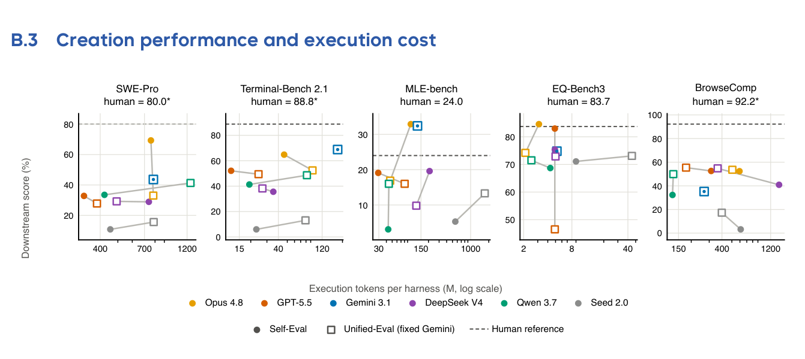
Table 9 Human-engineered reference systems. Each row records the harness–executor pair associated with the public system-level reference used in Table 3.
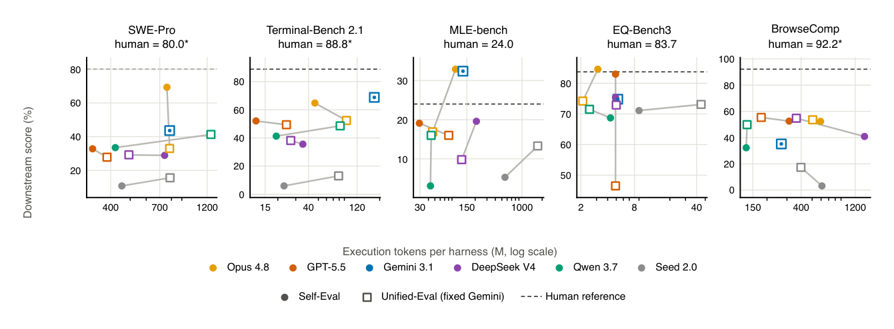
Figure 9 Cost vs. performance (RQ1). Downstream score against execution tokens (log scale) under Self-Eval (filled circles) and Unified-Eval (open squares; fixed executor Gemini 3.1 Pro); dashed lines mark the human-engineered reference where measured. All points are the avg@3 entries of Table 3 and Table 4; Gemini is the fixed-executor control, so its two markers coincide and appear as a dot inside a square. Similar quality can differ by close to an order of magnitude in cost—on MLE-bench, GPT-5.5 reaches a medal rate of 19.1 with 29.3M tokens while DeepSeek V4 reaches 19.6 with 208.4M. We report this performance–token trade-off directly rather than collapsing it into a single cost-adjusted score (Section 3.5).
The three starred values in Table 3 are external reports rather than local reruns: SWE-Pro 80.0 for Claude Fable 5, Terminal-Bench 2.1 88.8 for GPT-5.6 Sol, and BrowseComp 92.2 for GPT-5.6 Sol. Each value is taken from the corresponding benchmark row in OpenAI’s official GPT-5.6 release report [34].
表 3 中三个带星号的数值是外部报告结果而非本地复跑：Claude Fable 5 的 SWE-Pro 80.0、GPT-5.6 Sol 的 Terminal-Bench 2.1 88.8，以及 GPT-5.6 Sol 的 BrowseComp 92.2。每个数值均取自 OpenAI 官方 GPT-5.6 发布报告 [34] 中对应的基准行。
23
23
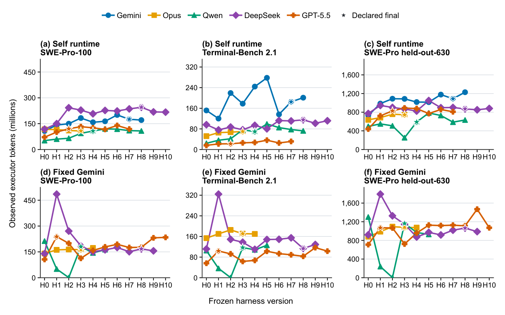
Figure 10 RQ2 executor-token cost across frozen harness versions. The top row uses self runtime and the bottom row uses the fixed Gemini runtime; columns show SWE-Pro-100, Terminal-Bench 2.1, and the post-freeze SWE-Pro held-out-630 split. Each point sums the observed task-agent/runtime total_tokens for one frozen harness and benchmark leg. Creator, judge, and probe tokens are excluded.图 10 以每个冻结 harness 版本的执行器侧用量补充 RQ2 分数轨迹。我们将任务智能体/运行时的用量与创建者、评判器及诊断探测消耗的 token 分开统计。
B.4 Evolution execution cost by frozen version
B.4 各冻结版本的演化执行成本
C Harness Interface SpecificationC Harness 接口规范
Each admissible harness implements six functional modules:
每个合格的 harness 须实现六个功能模块：
All methods return JSON-serializable objects. The reference seed implementation, the audit script, and the
所有方法均返回可 JSON 序列化的对象。参考种子实现、审计脚本以及
24
24
held-out task splits will be released with the benchmark.
held-out 任务划分将随基准一并发布。
C.1 Seed Harness Skeleton
C.1 种子 Harness 骨架
The weak seed shared across Creation domains (Section 3.2) supplies only the runnable floor beneath the contract above: a stable CLI, runtime model configuration, audit writers, and policy-free primitives. Its concrete packaging may vary with the execution environment, but no variant contains a task-solving policy. Figures 2 and 3 in the main text give the domain-general structure and separate the shared audit contract from domain-specific final artifacts.
在 Creation 各领域间共享的弱种子（3.2 节）只为上述契约提供可运行的底座：稳定的 CLI、运行时模型配置、审计写入器以及不含策略的原语。其具体封装形式可能随执行环境而异，但任何变体都不包含解题策略。正文图 2 与图 3 给出了领域无关的结构，并将共享的审计契约与领域相关的最终制品分开呈现。
The unmodified seed performs one non-acting pass: it parses the task and environment, optionally probes the configured LLM with a summary-only prompt, and terminates with status partial after writing the audit envelope. It provides no execution loop, tool policy, context management, state or memory, failure recovery, or verifier. The creator must therefore implement these modules using only feedback from public development tasks; hidden tasks, answers, and official scores remain withheld.
未经修改的种子只执行一次“不动手”的流程：它解析任务与环境，可选地以仅含摘要的提示词探测所配置的 LLM，并在写入审计信封后以状态 partial 终止。它不提供执行循环、工具策略、上下文管理、状态或记忆、故障恢复或验证器。因此，创建者必须仅凭公开开发任务的反馈实现这些模块；隐藏任务、答案与官方分数始终不予提供。
The interface and honest-status semantics are shared, but the authoritative final artifact is domain-specific. Code requires real repository changes and a patch; data analysis requires a scorer-readable submission; writing requires final user-facing prose; and research/search requires a concise answer grounded in retrieved evidence. Each frozen evaluator reads the corresponding authoritative artifact. Producing only the common JSON and log files is therefore an incomplete execution and, as shown in Table 3, the unmodified seed scores zero across all five downstream benchmarks.
接口与诚实状态语义是共享的，但权威最终制品因领域而异：Code 需要真实的仓库修改与补丁；数据分析需要 scorer 可读的提交文件；写作需要面向最终用户的成文；研究/搜索需要以检索证据为依据的简洁回答。每个冻结的评估器读取相应的权威制品。因此，只产出通用 JSON 与日志文件属于不完整的执行；如表 3 所示，未经修改的种子在全部五个下游基准上均为零分。
D Evaluation Settings and Roles in FullD 评估设置与角色全览
This appendix gives the evaluation-setting and model-role definitions summarized in Section 3.4.
本附录给出 3.4 节所概述的评估设置与模型角色定义。
D.1 Self and unified evaluation
D.1 Self-Eval 与 Unified-Eval
We evaluate a created harness under two executor settings. Self-Eval asks whether the harness helps the
我们在两种执行器设置下评估创建出的 harness。Self-Eval 检验 harness 能否帮助
model that built it, whereas Unified-Eval tests the same generated harnesses with a common executor.
构建它的模型，而 Unified-Eval 则用一个公共执行器测试同样的生成 harness。
Under Self-Eval, LE = LC: the creator LLM runs the hidden tasks using its own harness H. This is the regime users actually deploy, and it measures model–harness co-design: whether a model can build a harness suited to its own capability boundary. Under Unified-Eval, a single fixed LE runs every harness produced by every LC, removing executor-LLM differences so far as possible; LE is held constant across all comparisons (Gemini 3.1 Pro in the reported fixed-executor ablation). The executor may itself appear as a creator; when
在 Self-Eval 下，LE = LC：创建者 LLM 用自己的 harness H 运行隐藏任务。这是用户实际部署的场景，度量的是模型–harness 协同设计：模型能否构建出适合自身能力边界的 harness。在 Unified-Eval 下，由单一固定 LE 运行每个 LC 产出的所有 harness，尽可能消除执行器 LLM 之间的差异；LE 在所有比较中保持恒定（在所报告的固定执行器消融中为 Gemini 3.1 Pro）。执行器模型本身也可能作为创建者出现；此时
included, its own-harness cell then coincides with its Self-Eval run—and cross-creator differences under the shared executor still isolate harness quality from executor ability. A high unified score indicates the harness is a transferable software asset rather than a fit to one model. Human-engineered systems are external references, not a third executor setting. They show the distance from selected mature systems but are not paired controls under a common executor and should not be interpreted as an absolute ceiling.
将其纳入时，其自身 harness 单元与其 Self-Eval 运行重合——而共享执行器下的跨创建者差异仍能把 harness 质量与执行器能力区分开。较高的 Unified-Eval 分数表明 harness 是可迁移的软件资产，而非对某个特定模型的适配。人工工程系统是外部参考，并非第三种执行器设置：它们展示了与所选成熟系统的差距，但并非同一公共执行器下的成对对照，不应被解读为绝对上限。
25
25
D.2 Model roles
D.2 模型角色
Following Section 3.1, LC builds or modifies the harness, D supplies file reading, code editing, testing, and debugging, and LE runs downstream tasks only after H is frozen. The evaluator J scores the resulting task output. Separating these roles prevents us from attributing support from D or execution ability from LE to the quality of H. The reported experiments therefore record D for each creator configuration and fix LE and J within every comparison.
遵循 3.1 节的定义，LC 负责构建或修改 harness，D 提供文件读取、代码编辑、测试与调试，LE 只在 H 冻结后运行下游任务，评估器 J 为产生的任务输出打分。区分这些角色可以避免把来自 D 的支持或来自 LE 的执行能力错误归因于 H 的质量。因此，所报告的实验为每个创建者配置记录其 D，并在每次比较内固定 LE 与 J。
E Representative System PromptsE 代表性系统提示词
This appendix presents the two system prompts that define the representative harness-development settings studied in RQ1 and RQ2. Task-specific prompts and auxiliary workspace documents are omitted because the purpose here is to illustrate the system-level contracts. The RQ1 prompt was shared across creation domains and Creator models. For the rendered RQ2 V6 prompt, only run-specific filesystem paths and baseline evaluation identifiers are replaced by angle-bracketed placeholders; all substantive instructions are unchanged.
本附录呈现定义 RQ1 与 RQ2 所研究的代表性 harness 开发设置的两个系统提示词。任务特定提示词与辅助工作区文档从略，因为此处旨在说明系统级契约。RQ1 提示词在各创建领域与各创建者模型间共享。对于渲染出的 RQ2 V6 提示词，仅将运行特定的文件系统路径与基线评估标识符替换为尖括号占位符，所有实质性指令均保持不变。
E.1 RQ1: shared harness-creation system prompt
E.1 RQ1：共享的 harness 创建系统提示词
26
26
27
27
28
28
E.2 RQ2: harness-evolution system prompt
E.2 RQ2：harness 演化系统提示词
29
29
30
30
F RQ1 Code: GPT-5.5
F RQ1 Code：GPT-5.5
+1251 / -4
+1251 / -4
31
31
Observation. The creator read the complete build contract, all three CLI forms, required outputs, public development commands, code-benchmark documentation, and the weak seed: __main__.py, seed_runner.py, the LLM client, and primitives. Diagnosis. The seed could call tools but could not genuinely solve tasks.
观察。创建者通读了完整的构建契约、全部三种 CLI 形式、要求的输出、公开开发命令、代码基准文档以及弱种子：__main__.py、seed_runner.py、LLM 客户端与原语。诊断。种子能够调用工具，却无法真正解决任务。
Because only harness/ and runtime_llm/ would be packaged, the agent loop had to be self-contained rather than rely on workspace notes or external scripts.
由于只有 harness/ 与 runtime_llm/ 会被打包，agent 循环必须做到自包含，而不能依赖工作区笔记或外部脚本。
Plan. Runtime LLM selects actions →the harness parses JSON →executes read, write, search, shell, or patch tools →returns observations →verifies →emits benchmark-readable artifacts. Modification. A new
计划。运行时 LLM 选择动作 → harness 解析 JSON → 执行 read、write、search、shell 或 patch 工具 → 返回观察 → 验证 → 产出基准可读制品。修改。一个新的
harness/agent.py centralized parsing, dispatch, state, verification, and finalization while retaining seed primitives. GPT deliberately concentrated reliability logic in one control surface so deviations in runtime-model output could be repaired directly from trajectories.
harness/agent.py 集中处理解析、分发、状态、验证与收尾，同时保留种子原语。GPT 有意将可靠性逻辑集中于单一控制面，使运行时模型输出的偏差可以直接依据轨迹加以修复。
Observation. The runtime model made one real LLM call, invoked write_file, and created smoke_out.txt. However, the result was partial: patch.diff and changed_files were empty even though the non-git target file existed. The initial scan of the broad /tmp directory also consumed noisy context. Modification. Narrow the
观察。运行时模型进行了一次真实的 LLM 调用，调用 write_file 并创建了 smoke_out.txt。然而结果为 partial：尽管非 git 目标文件确实存在，patch.diff 与 changed_files 却为空。对宽泛的 /tmp 目录的初始扫描也引入了嘈杂的上下文。修改。收窄
initial environment summary; add artifact_paths; and register files created by write, replacement, and patch tools independently of git diff.
初始环境摘要；添加 artifact_paths；并独立于 git diff 登记由 write、替换与 patch 工具创建的文件。
Evaluation. A fresh run created result.txt containing exactly OK. result.json reported status=success, two LLM calls, two tool calls, one file write, and artifact_paths=[result.txt] even though the directory was not a git repository. Decision. The original defect was artifact bookkeeping rather than an inability to execute the
评估。一次全新运行创建了内容恰为 OK 的 result.txt；result.json 报告 status=success、两次 LLM 调用、两次工具调用、一次文件写入以及 artifact_paths=[result.txt]，尽管该目录并非 git 仓库。决策。最初的缺陷在于制品记账，而非无法执行
32
32
Observation. The created agent was investigating the repository, but some assistant turns contained several complete JSON actions. The first parser accepted only one object and recorded the whole turn as invalid, wasting steps and context. Modification. Add _extract_json_objects() with JSONDecoder.raw_decode and convert
观察。创建的 agent 正在调查仓库，但部分 assistant 轮次包含多个完整的 JSON 动作。首个解析器只接受单个对象，并把整个轮次记为无效，浪费了步数与上下文。修改。添加 _extract_json_objects()，使用 JSONDecoder.raw_decode 并转换
Observation. Multi-object recovery worked in the new run, which then reached commands using source, environment activation, and other Bash syntax. subprocess.run(shell=True) invoked /bin/sh and rejected otherwise executable fallbacks. Modification. Select /bin/bash when shell execution is requested and Bash
观察。多对象恢复在新运行中奏效，随后运行遇到了使用 source、环境激活及其他 Bash 语法的命令。subprocess.run(shell=True) 调用的是 /bin/sh，因而拒绝了原本可执行的回退方案。修改。当请求 shell 执行时改用 /bin/bash，并对 Bash
Observation. The partial created-agent trajectory showed the harness creating and compiling /app/gpt2.c. This demonstrated genuine Terminal execution beyond a toy smoke, but the run ended without a complete summary or verifier result. Decision. Preserve the run as pending diagnostic feedback, not as a score, and
观察。未完成的创建 agent 轨迹显示 harness 创建并编译了 /app/gpt2.c。这证明了超越玩具式冒烟测试的真实 Terminal 执行，但运行在缺少完整摘要或验证器结果的情况下结束。决策。将该运行保留为待定的诊断反馈而非分数，并
Evaluation. The final_harness_check run used the alternate –workspace/–output/–max-turns CLI form, created check.txt containing OK, returned status=success, and recorded artifact_paths=[check.txt]. Deci-
评估。final_harness_check 运行使用了备选的 –workspace/–output/–max-turns CLI 形式，创建了包含 OK 的 check.txt，返回 status=success，并记录 artifact_paths=[check.txt]。决
33
33
Observation. Attempt 2 reread DESIGN_NOTES.md, the file listing, prior dev state, compile/help output, and agent.py. It explicitly treated the previous SWE and Terminal runs as incomplete feedback. Evaluation. A
观察。第 2 次尝试重读了 DESIGN_NOTES.md、文件列表、先前的开发状态、编译/帮助输出以及 agent.py，并明确将之前的 SWE 与 Terminal 运行视为不完整的反馈。评估。一次
only identical safe actions within a batch; never deduplicate write, patch, or finish. Route Codex envelopes through a dedicated parser while retaining git apply and patch -p1/-p0 fallbacks.
仅对同一批次内完全相同的安全动作去重；绝不对 write、patch 或 finish 去重。将 Codex 信封交由专用解析器处理，同时保留 git apply 与 patch -p1/-p0 回退。
Observation. The live trajectory again showed an identical run_command repeated within one batch. GPT extended safe deduplication to commands with identical arguments while preserving every write operation. The run created and compiled /app/gpt2.c. Decision. Wait for the outer grader and read both verifier reward and
观察。实时轨迹再次显示同一 run_command 在一个批次内重复出现。GPT 将安全去重扩展到参数完全相同的命令，同时保留每一个写操作。该运行创建并编译了 /app/gpt2.c。决策。等待外部评分器，并同时读取验证器奖励与
Evaluation. The final smoke made one LLM call, created hello.txt, returned status=success, recorded the artifact, and passed the artifact check. GPT also compiled the package, scanned placeholders, repaired two remaining pass statements, rescanned, verified output files, and removed __pycache__. Final decision.
评估。最终冒烟测试进行了一次 LLM 调用，创建 hello.txt，返回 status=success，登记制品并通过制品检查。GPT 还编译了整个包、扫描占位符、修复了两处遗留的 pass 语句、重新扫描、验证输出文件并删除了 __pycache__。最终决策。
Stop with the complete record: contract smoke=1, SWE=0, Terminal=1. The official scores and the local final-snapshot verification remain causally distinct.
以完整记录收束：contract smoke=1，SWE=0，Terminal=1。官方分数与本地最终快照验证在因果上彼此独立。
G RQ1 Code: Opus-4.8
G RQ1 Code：Opus-4.8
+1252 / -596
+1252 / -596
34
34
one persistent message list to reuse the provider signature correctly, so the core should be a single-threaded native tool-calling ReAct loop.
一个持久的消息列表，以正确复用提供商签名，因此核心应是一个单线程的原生工具调用 ReAct 循环。
Modification. Opus mapped real responsibilities to modules: agent.py for execution and lifecycle; tools.py and schemas.py for structured tools; taskspec.py and prompts.py for classification and context; runner.py for diffs, untracked files, verification, and artifacts.
修改。Opus 将真实职责映射到各模块：agent.py 负责执行与生命周期；tools.py 与 schemas.py 负责结构化工具；taskspec.py 与 prompts.py 负责分类与上下文；runner.py 负责 diff、未跟踪文件、验证与制品。
Modification. Set max_steps=120, a 6,600-second time budget, and a 150,000-token soft context limit. Retain the latest three tool observations when compacting context; stop on budget; and downgrade repeated no-tool turns or an empty repository diff to partial rather than falsely report success.
修改。设定 max_steps=120、6,600 秒时间预算与 150,000 token 软上下文上限。压缩上下文时保留最近三条工具观察；到达预算即停止；并将重复的无工具轮次或空仓库 diff 降级为 partial，而非虚报成功。
Observation. Calling python -m harness from /tmp returned No module named harness. No created-agent loop or tool trajectory had started. Diagnosis and decision. The local working directory lacked the online
观察。从 /tmp 调用 python -m harness 返回 No module named harness，创建 agent 循环与工具轨迹均未启动。诊断与决策。本地工作目录缺少线上的
35
35
Evaluation. In a temporary git repository, the created agent diagnosed return a - b, changed it to addition, adapted when pytest was unavailable, and produced a clean non-empty patch and successful result. Decision.
评估。在一个临时 git 仓库中，创建的 agent 诊断出 return a - b 的问题并将其改为加法，在 pytest 不可用时做出相应调整，最终产出干净的非空补丁并成功通过。决策。
Observation. The smoke validated the CLI, runtime model invocation, output files, and trajectory. The feedback matched the intended contract check, so Opus retained the implementation.
观察。冒烟测试验证了 CLI、运行时模型调用、输出文件与轨迹。反馈与预期的契约检查相符，因此 Opus 保留了该实现。
Observation. The created agent located Ansible shebang logic, edited source and changelog files, and ran pytest/import checks. The loop completed investigate →edit →verify, but the concrete patch failed the grader. Decision. Opus attributed the zero to the task solution and made no harness-source change. This retained the
观察。创建的 agent 定位了 Ansible 的 shebang 逻辑，编辑了源码与变更日志文件，并运行了 pytest/导入检查。循环完成了调查 → 编辑 → 验证，但具体补丁未通过评分器。决策。Opus 将零分归因于任务解法本身，未对 harness 源码做任何修改。这保留了
Observation. The created agent reverse-engineered the GPT-2 checkpoint layout, compiled and linked repeatedly, and wrote /app/gpt2.c. The long execution chain was real, but the verifier rejected the solution. Decision.
观察。创建的 agent 逆向工程了 GPT-2 检查点布局，反复编译与链接，并写出 /app/gpt2.c。这一长执行链真实存在，但验证器最终拒绝了该解法。决策。
36
36
Observation. Reference searches showed that the new control flow no longer used primitives/ or io_contract.py. llm_client.py remained a real fallback when runtime_llm import failed. Modification. Delete the unused
观察。参照检索表明新的控制流已不再使用 primitives/ 与 io_contract.py；而 llm_client.py 在 runtime_llm 导入失败时仍是真实可用的回退。修改。删除未使用的
Evaluation. Using –task-json, –workdir, and –output-dir, the harness created ok.txt containing DONE. The output directory contained changed_files.json, patch.diff, response.md, result.json, stderr.log, stdout.log, and trajectory.jsonl. Decision. The pruned final package still satisfied the alternate invocation contract and complete
评估。使用 –task-json、–workdir 与 –output-dir，harness 创建了包含 DONE 的 ok.txt。输出目录包含 changed_files.json、patch.diff、response.md、result.json、stderr.log、stdout.log 与 trajectory.jsonl。决策。精简后的最终包仍满足备选调用契约与完整的
Observation. Opus checked all three CLI forms, target-file contents, seven required artifact classes, module imports, and the package listing. The final harness/*.py contained 1,876 lines. Final decision. Record contract
观察。Opus 检查了全部三种 CLI 形式、目标文件内容、七类必需制品、模块导入与包清单。最终的 harness/*.py 共 1,876 行。最终决策。记录 contract
H RQ2 Code: GPT-5.5
H RQ2 Code：GPT-5.5
+5.87 pp
+5.87 pp
51.0/ 67.416/ 67.416
T2 · 56.0 / 74.157
T2 · 56.0 / 74.157
Observation and analysis. Complete settled H0 was not available. From the source and a local compileall failure, the creator inferred a Python 3 entry point and predicted Terminal failures from implicit artifact paths, permissions, and repeated actions. Modification and core diff. Add stat_path, mkdir, chmod, and plan tools;
观察与分析。完整落定的 H0 尚不可得。创建者从源码与一次本地 compileall 失败推断出 Python 3 入口点，并根据隐式制品路径、权限与重复动作预判了 Terminal 失败。修改与核心 diff。添加 stat_path、mkdir、chmod 与 plan 工具；
37
37
• H0 was later confirmed as SWE 51/100 and Terminal 60/89. • This round was architecture-first rather than feedback-driven.
• H0 后来被确认为 SWE 51/100 与 Terminal 60/89。• 这一轮是架构优先而非反馈驱动。
Observation and analysis. Both T1 benchmarks regressed. Terminal failures showed that the adapter had not crashed; the agent declared success after weak self-written checks. SWE inspection covered only a few cases. Modification and core diff. Block immediate success under low evidence or failed verification; add
观察与分析。T1 的两个基准均出现回退。Terminal 失败表明适配器并未崩溃：agent 在薄弱的自写检查之后便宣告成功。SWE 检查仅覆盖少数案例。修改与核心 diff。在证据不足或验证失败时阻止立即宣告成功；添加
_final_review_if_needed(); and check exact paths, permissions, output format, and real verification before
_final_review_if_needed()；并在收尾前检查确切路径、权限、输出格式与真实验证
• Hypothesis: low evidence or failed verification must block finish(success). • This was the only round with a helper-level local assertion.
• 假设：低证据或验证失败必须阻止 finish(success)。• 这是唯一一轮带有辅助函数级别的本地断言。
Observation and analysis. After T2 became the current best, the creator judged the gate’s trigger surface too narrow and extended final review from low-evidence tasks to all Terminal successes. Modification and core
观察与分析。在 T2 成为当前最优之后，创建者判断该门的触发面过窄，于是将最终审查从低证据任务扩展到所有 Terminal 成功。修改与核心
• Task-path extraction and test-path filtering were tightened together. • The creator extrapolated an existing mechanism rather than identifying a new failure bucket.
• 任务路径提取与测试路径过滤被一并收紧。• 创建者是对既有机制做了外推，而非识别出新的失败类别。
Observation and analysis. The creator injected verification gaps into the decision prompt. When the fixed Terminal probe fell from 4/5 to 3/5, it retained path filtering and removed gap enforcement. Modification and
观察与分析。创建者向决策提示词注入了验证缺口。当固定的 Terminal 探测从 4/5 降至 3/5 时，它保留了路径过滤并移除了缺口强制逻辑。修改与
• The probe explicitly controlled whether to roll back. • No relationship was estimated between the n=5 probe and full evaluation.
• 探测明确控制了是否回滚。• 未对 n=5 探测与完整评估之间的关系做出任何估计。
38
38
Observation and analysis. Terminal trajectories showed that shell commands modified files without write_file, so the artifact tracker never recorded them. The final gate therefore lacked awareness of real artifact changes. Modification and core diff. Add _file_snapshot(); compare files before and after run_command; record new
观察与分析。Terminal 轨迹显示 shell 命令在未经 write_file 的情况下修改了文件，制品追踪器因此从未记录这些变化。最终门由此缺乏对真实制品变化的感知。修改与核心 diff。添加 _file_snapshot()；比较 run_command 前后的文件；记录新
• No new SWE failure case was opened. • The iteration remained focused on Terminal artifact handling.
• 未开启新的 SWE 失败案例。• 本轮迭代仍聚焦于 Terminal 制品处理。
Observation and analysis. The creator tried retaining the head and tail of long output. After probes returned SWE 0.6 and Terminal 0.8, it narrowed the remaining failure to cancel-async-tasks. Modification and core
观察与分析。创建者尝试保留长输出的头尾。在探测返回 SWE 0.6 与 Terminal 0.8 之后，它将剩余失败的范围缩小到 cancel-async-tasks。修改与核心
• The probe served as a crash/regression gate. • 56c8380 lacked a settled SWE leg and remained transport diagnostic.
• 探测充当了崩溃/回归门。• 56c8380 缺少落定的 SWE 评估线，仍属传输诊断。
Observation and analysis. The creator suspected large files were read from the wrong position. A probe returned Terminal 1.0 but SWE 0.6, so it reverted offset reading and required finish to be a standalone explicit action. Probes then reached 4/5 and 5/5. Modification and core diff. Fully revert requested-offset reads for
观察与分析。创建者怀疑大文件是从错误位置读取的。一次探测返回 Terminal 1.0 而 SWE 仅 0.6，因此它回退了偏移读取，并要求 finish 必须是独立的显式动作。此后探测达到 4/5 与 5/5。修改与核心 diff。完全回退对……的请求偏移读取
• No compileall or smoke test ran in this round. • High probe scores did not transfer to the full evaluation.
• 本轮未运行 compileall 或冒烟测试。• 高探测分数并未迁移到完整评估。
39
39
• Final version: SWE 56.0, Terminal 74.157. • The creator never repaired its own 54% tool-call rejection.
• 最终版本：SWE 56.0，Terminal 74.157。• 创建者始终未修复其自身 54% 的工具调用拒绝率。
I RQ2 Code: Opus-4.8
I RQ2 Code：Opus-4.8
+3.00 pp
+3.00 pp
68.0/ 74.157/ 74.157
T3 · 74.0 / 74.157
T3 · 74.0 / 74.157
Observation and analysis. The creator found 56 SWE events with score=null and refused to score from the surface event stream. It read cases.json, the feedback index, and raw results to confirm H0=68/100, then classified about 10 of 32 SWE failures as hidden-grader build, compile, or import errors. Modification and
观察与分析。创建者发现 56 个 SWE 事件的 score=null，并拒绝仅凭表面事件流打分。它读取 cases.json、反馈索引与原始结果以确认 H0=68/100，随后将 32 个 SWE 失败中约 10 个归类为隐藏评分器的构建、编译或导入错误。修改与
• Thinking-block replay and prompt caching were checked first; latency was rejected as the main lever. • Hypothesis: agent self-tests do not imply hidden-grader interface correctness; finish must follow real execution.
• 思考块重放与提示词缓存被最先排查；延迟被排除为主要杠杆。• 假设：agent 自测通过并不意味着隐藏评分器接口正确；finish 必须跟随真实执行。
Observation and analysis. After T1 improved, the creator inspected 728 edits and found only 14 str_replace_- no_match events (1.8%), rejecting the stronger-editor route. It attributed remaining failures to subtle logic errors in multi-file changes. Modification and core diff. Add _current_diff() and one mandatory diff-grounded
观察与分析。T1 改进之后，创建者检查了 728 次编辑，仅发现 14 次 str_replace__no_match 事件（1.8%），据此否决了更强编辑器路线。它将剩余失败归因于多文件修改中的细微逻辑错误。修改与核心 diff。添加 _current_diff() 与一次强制的基于 diff 的
• The probe was explicitly treated as a noisy n=5 crash check. • The hypothesis was written to the ledger before the change.
• 探测被明确当作含噪的 n=5 崩溃检查。• 假设在修改之前即已写入台账。
40
40
Observation and analysis. Many Terminal artifacts were created through shell commands, so H2’s git-diff reflection never fired. The creator recorded write_file/str_replace paths and run_command state so non-git tasks could inspect recent artifacts before finishing. Modification and core diff. Add _written_paths,
观察与分析。许多 Terminal 制品经由 shell 命令创建，因此 H2 的 git-diff 反思从未触发。创建者记录了 write_file/str_replace 路径与 run_command 状态，使非 git 任务也能在收尾前检查最近的制品。修改与核心 diff。添加 _written_paths、
• All 25 T2 SWE failures had already triggered reflection. • R3 inspected concrete interface mismatches but still focused on general reflection.
• 全部 25 个 T2 SWE 失败都已触发过反思。• R3 检视了具体的接口不匹配，但仍聚焦于一般性反思。
Observation and analysis. The creator computed cross-version unions and intersections: SWE 81/65/19 and Terminal 71/59/18 for union/intersection/never-pass. Reflection caused further edits only about 4% of the time. It then attempted setsid + killpg for Bash timeouts. Modification and core diff. One session added
观察与分析。创建者计算了跨版本的并集与交集：SWE 为 81/65/19，Terminal 为 71/59/18，分别对应并集/交集/从未通过。反思仅在约 4% 的情况下引发了进一步编辑。随后它尝试用 setsid + killpg 处理 Bash 超时。修改与核心 diff。一个会话添加了
setsid/killpg while another checked out harness/tools.py and reverted it. Final commit 5faaa15 changed only LEDGER.md; no H4 code commit existed.
setsid/killpg，而另一个会话检出 harness/tools.py 并将其回退。最终 commit 5faaa15 仅改动了 LEDGER.md；并不存在 H4 的代码 commit。
• The creator judged it too risky to change Bash behavior for 189 tasks because of one edge case. • Two concurrent sessions made opposite edits to the same file.
• 创建者判断为一个边界情况而改动 189 个任务的 Bash 行为风险过大。• 两个并发会话对同一文件做了相反的修改。
Observation and analysis. The creator estimated noise of roughly ±3–4 tasks in one full evaluation and judged another trivial commit to be additional sampling rather than meaningful evolution. It declined to spend seven remaining pairs chasing a higher random peak. Modification and core diff. Do not add candidates or
观察与分析。创建者估计一次完整评估的噪声约为 ±3–4 个任务，并判断再提交一个无关紧要的 commit 只是额外采样，而非有意义的演化。它拒绝动用剩余的七个评估对去追逐更高的随机峰值。修改与核心 diff。不添加候选或
• Selected T3: SWE 74.0, Terminal 74.157. • T1 pair was higher by about 0.06 pp, while T1–T3 passed the same total number of tasks.
• 选定 T3：SWE 74.0，Terminal 74.157。• T1 对高出约 0.06 pp，而 T1–T3 通过的任务总数相同。
41
41